29 平面几何 (II)（Plane Geometry (II)）
平面几何(I) 把平面几何建立在直线图形上：全等与相似的判定、平行线与截线、毕氏定理、特殊四边形。本章把舞台交给圆。曲线图形同样经得起严格的演绎论证，而且结论比直线图形更为整齐，因为圆具有无穷的对称性：任何一条直径所在的直线都是它的对称轴。
全章三条主线。第一，圆的基本性质。弦与弧的关系由圆心角挂钩：等弦截取等弧，圆心到弦的垂线平分该弦，等弦与圆心等距。进一步的枢纽是圆心角定理
，同弓形内的圆周角相等、半圆上的圆周角是直角、圆内接四边形对角互补，全是它的推论。再往反面走一步：给了角度关系，怎样判定四点共圆，这是 DSE 几何证明题的主要工具。第二，涉及切线的几何。切线与圆只有一个公共点，切点便是圆心到直线的最近点，故半径垂直于切线；「直线与圆的位置关系」定理则把相交、相切、相离统一成 与 的比较；弦切角等于内错弓形上的圆周角，则是倒角题中最容易被忽视的一条。本章另以圆幂定理把两弦相交的长度关系统一起来，该定理超出常规课程要求，作扩展阅读处理。第三，三角形的四心。重心、外心、内心、垂心的差别只在构造线不同，而外心与内心正是外接圆与内切圆的圆心，与前两条主线在此汇合。
本章按此铺排：§29.1 圆的基本性质（弧与弦、圆上的角、圆内接四边形与四点共圆）；§29.2 涉及切线的几何（切线的性质与判定、弦切角与内错弓形、圆幂定理）；§29.3 三角形的四心（特殊线段与两条等距性质、内心与外心、重心与垂心、四心的比较）；§29.4 作全章总结。
29.1 圆的基本性质（Basic Properties of Circles）
本节难度上限：T B+ ｜ C C ｜ E B- ｜ Q C+
29.1.1 圆上的弧与弦（Arcs and Chords）
平面几何(I) §8.9 已经给出圆的直观定义：平面上到定点的距离等于定长的所有点的集合。集合论 为这句话提供了符号形式：把平面视为
以
即所有到
定义中不等号两侧的距离
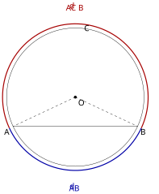
查看 TikZ 原始碼
\begin{document}
\begin{tikzpicture}[scale=1.5]
\coordinate (O) at (0,0);
\draw (O) circle (2);
\coordinate (A) at (205:2);
\coordinate (B) at (335:2);
\coordinate (C) at (85:2);
\draw (A) -- (B);
\draw[dashed] (O) -- (A) (O) -- (B);
\path[draw, blue!65!black, very thick] (205:2.12) arc (205:335:2.12);
\path[draw, red!65!black, very thick] (335:2.12) arc (335:565:2.12);
\node[below left] at (A) {$A$};
\node[below right] at (B) {$B$};
\node[right] at (C) {$C$};
\fill (O) circle (1.2pt) node[below right] {$O$};
\node[blue!65!black] at (270:2.6) {$\widehat{AB}$};
\node[red!65!black] at (90:2.62) {$\widehat{ACB}$};
\end{tikzpicture}
\end{document}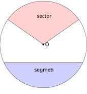
查看 TikZ 原始碼
\begin{document}
\begin{tikzpicture}[scale=1.5]
\coordinate (O) at (0,0);
\fill[blue, opacity=0.18] (205:2) arc (205:335:2) -- cycle;
\fill[red, opacity=0.18] (O) -- (35:2) arc (35:145:2) -- cycle;
\draw (O) circle (2);
\draw (205:2) -- (335:2);
\draw (O) -- (35:2) (O) -- (145:2);
\fill (O) circle (1.2pt) node[right] {$O$};
\node at (270:1.2) {segment};
\node at (90:1.3) {sector};
\end{tikzpicture}
\end{document}设
- 弦（Chord）：连接
- 弧（Arc）：圆周被
图 29-1：弦
把圆周分成劣弧 与优弧 ， 是优弧上用来指明所指的点。
- 弓形（Segment）：一条弦与它所对的弧围成的区域，如图 29-2 的阴影部分。
图 29-2：蓝色阴影是弦
与劣弧 围成的弓形（Segment），红色阴影是以 为顶点的扇形（Sector）。
- 扇形（Sector）：两条半径与它们所截的弧围成的区域。
- 弦心距（Distance from Centre to Chord）：圆心到该弦的垂线段长度，即 §8.6 意义下点
弦与弧的分别是：弦是直线段，量的是两端点之间的直线距离；弧是曲线，量的是沿圆周走过的长度。§8.9 已指出「弧长与圆心角成正比」，本章把它作为既定事实使用。
下面第一条定理把弦与弧的关系化归为全等三角形。
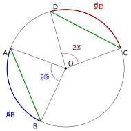
查看 TikZ 原始碼
\begin{document}
\begin{tikzpicture}[scale=1.5]
\coordinate (O) at (0,0);
\draw (O) circle (2);
\coordinate (A) at (160:2);
\coordinate (B) at (245:2);
\coordinate (C) at (20:2);
\coordinate (D) at (105:2);
\draw[green!55!black, very thick] (A) -- (B) (C) -- (D);
\path[draw, blue!65!black, very thick] (160:2) arc (160:245:2);
\path[draw, red!65!black, very thick] (20:2) arc (20:105:2);
\draw (O) -- (A) (O) -- (B);
\draw (O) -- (C) (O) -- (D);
\draw[blue!65!black] (160:0.5) arc (160:245:0.5);
\node[blue!65!black] at (202.5:0.8) {$2\alpha$};
\draw[red!65!black] (20:0.5) arc (20:105:0.5);
\node[red!65!black] at (62.5:0.8) {$2\alpha$};
\fill (O) circle (1.2pt) node[above right] {$O$};
\node[below left] at (A) {$A$};
\node[below left] at (B) {$B$};
\node[below right] at (C) {$C$};
\node[above right] at (D) {$D$};
\node[blue!65!black] at (220:2.42) {$\widehat{AB}$};
\node[red!65!black] at (62:2.42) {$\widehat{CD}$};
\end{tikzpicture}
\end{document}在同圆或等圆中，等弦所对的劣弧相等，如图 29-3 所示；反之，等弧所对的弦相等。
图 29-3：等弦
所对的劣弧 （蓝、红两段粗弧），圆心角同为 。
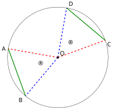
查看 TikZ 原始碼
\begin{document}
\begin{tikzpicture}[scale=1.5]
\coordinate (O) at (0,0);
\draw (O) circle (2);
\coordinate (A) at (170:2);
\coordinate (B) at (230:2);
\coordinate (C) at (20:2);
\coordinate (D) at (80:2);
\draw[green!55!black, very thick] (A) -- (B) (C) -- (D);
\draw[red, very thick, dashed] (O) -- (A) (O) -- (C);
\draw[blue, very thick, dashed] (O) -- (B) (O) -- (D);
\fill (O) circle (1.2pt) node[above right] {$O$};
\node[left] at (A) {$A$};
\node[below left] at (B) {$B$};
\node[below right] at (C) {$C$};
\node[above right] at (D) {$D$};
\node at (200:0.75) {$\alpha$};
\node at (50:0.75) {$\alpha$};
\end{tikzpicture}
\end{document}设圆
连接
图 29-4：
时 （SSS）。 同色边对应相等：红（
）、蓝（ ）、绿（ ），故两弦所对的圆心角同为 ，所截的劣弧也相等。
在
两弦所对的圆心角相等。
由 §8.9 的「弧长与圆心角成正比」，在半径同为
反之，若
此时在
弦的性质集中在一条垂线上。
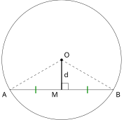
查看 TikZ 原始碼
\begin{document}
\begin{tikzpicture}[scale=1.5]
\coordinate (O) at (0,0);
\draw (O) circle (2);
\coordinate (A) at (210:2);
\coordinate (B) at (330:2);
\coordinate (M) at (0,-1);
\draw (A) -- (B);
\draw[very thick] (O) -- (M);
\draw (M) -- ++(0,0.22) -- ++(0.22,0) -- ++(0,-0.22);
\draw[dashed] (O) -- (A) (O) -- (B);
\fill (O) circle (1.2pt) node[above right] {$O$};
\node[below left] at (A) {$A$};
\node[below right] at (B) {$B$};
\node[below left] at (M) {$M$};
\node[right] at (0,-0.5) {$d$};
\draw[green!55!black, very thick] (-0.866,-1.12) -- (-0.866,-0.88);
\draw[green!55!black, very thick] (0.866,-1.12) -- (0.866,-0.88);
\end{tikzpicture}
\end{document}从圆心向一条弦引的垂线平分该弦，如图 29-5 所示。
图 29-5：圆心
到弦 的垂线 的垂足 平分 ，即 。
查看 TikZ 原始碼
\begin{document}
\begin{tikzpicture}[scale=1.5]
\coordinate (O) at (0,0);
\draw (O) circle (2);
\coordinate (A) at (195:2);
\coordinate (B) at (345:2);
\coordinate (M) at (270:0.52);
\draw (A) -- (B);
\draw[very thick] (O) -- (M);
\draw (M) -- ++(-0.2,0) -- ++(0,0.2) -- ++(0.2,0);
\draw[dashed] (O) -- (A) (O) -- (B);
\fill (O) circle (1.2pt) node[above right] {$O$};
\node[below left] at (A) {$A$};
\node[below right] at (B) {$B$};
\node[below left] at (M) {$M$};
\node[right] at (270:0.26) {$d$};
\end{tikzpicture}
\end{document}设
连接
在
由 RHS 得
图 29-6：
则 为 的中点；
的长度 即弦 的弦心距。
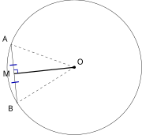
查看 TikZ 原始碼
\begin{document}
\begin{tikzpicture}[scale=1.5]
\coordinate (O) at (0,0);
\draw (O) circle (2);
\coordinate (A) at (-1.88,0.68);
\coordinate (B) at (-1.70,-1.06);
\coordinate (M) at (-1.79,-0.19);
\draw (A) -- (B);
\draw[very thick] (O) -- (M);
\draw[blue!70!black, thick] (-1.6806,-0.1784) -- (-1.6919,-0.069) -- (-1.8013,-0.0806);
\draw[blue!70!black, very thick] (-1.87,-0.46) -- (-1.65,-0.43);
\draw[blue!70!black, very thick] (-1.92,0.06) -- (-1.71,0.08);
\draw[dashed] (O) -- (A);
\draw[dashed] (O) -- (B);
\fill (O) circle (1.2pt) node[above right] {$O$};
\node[above left] at (A) {$A$};
\node[below left] at (B) {$B$};
\node[left] at (M) {$M$};
\end{tikzpicture}
\end{document}连结圆心与一条弦（直径除外）的中点的线段垂直于该弦，如图 29-7 所示。
图 29-7：弦
的中点 ，直线 垂直于 （ 处为直角）。
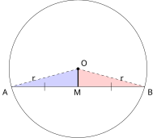
查看 TikZ 原始碼
\begin{document}
\begin{tikzpicture}[scale=1.5]
\coordinate (O) at (0,0);
\coordinate (A) at (195:2);
\coordinate (B) at (345:2);
\coordinate (M) at (270:0.52);
\fill[blue, opacity=0.18] (O) -- (A) -- (M) -- cycle;
\fill[red, opacity=0.18] (O) -- (M) -- (B) -- cycle;
\draw (O) circle (2);
\draw (A) -- (B);
\draw[dashed] (O) -- (A) (O) -- (B);
\draw[very thick] (O) -- (M);
\draw (-0.97,-0.64) -- (-0.97,-0.40) (0.97,-0.64) -- (0.97,-0.40);
\node at (-1.28,-0.3) {$r$};
\node at (1.28,-0.3) {$r$};
\fill (O) circle (1.2pt) node[above right] {$O$};
\node[below left] at (A) {$A$};
\node[below right] at (B) {$B$};
\node[below] at (M) {$M$};
\end{tikzpicture}
\end{document}查看 TikZ 原始碼
\begin{document}
\begin{tikzpicture}[scale=1.5]
\coordinate (A) at (-2,0);
\coordinate (B) at (2,0);
\coordinate (M) at (0,0);
\coordinate (O) at (0,1.9);
\draw (A) -- (B);
\draw (O) -- (A) (O) -- (B);
\draw[very thick] (O) -- (M);
\draw (0.55,0) arc (0:90:0.55);
\draw (-0.55,0) arc (180:90:0.55);
\node at (0.44,0.32) {$\alpha$};
\node at (-0.44,0.32) {$\alpha$};
\fill (M) circle (1.2pt) node[below] {$M$};
\node[below left] at (A) {$A$};
\node[below right] at (B) {$B$};
\node[above right] at (O) {$O$};
\end{tikzpicture}
\end{document}设
在
图 29-8A：蓝色
与红色 中， 、 （单撇）、 （粗线）为公共边，由 SSS 得两三角形全等。
又
图 29-8B：全等给出
，而 、 、 共线使两者合成平角， ，故 。
推论中「直径除外」不可省：若
为直径，圆心 已在 上，其中点 与 重合，线段 退化为一个点，谈不上与 垂直。这也说明同一条直线可以与圆有两个交点而又经过圆心，此时弦心距为 。
垂直平分线与「到两端点等距」是同一件事的两面，这一点在下一节讨论弦的垂直平分线时会直接用。
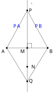
查看 TikZ 原始碼
\begin{document}
\begin{tikzpicture}[scale=1.5]
\coordinate (A) at (0,0);
\coordinate (B) at (2,0);
\coordinate (M) at (1,0);
\coordinate (P) at (1,1.8);
\coordinate (N) at (1,-0.9);
\coordinate (Q) at (1,-1.6);
\draw (A) -- (B);
\draw (1,-2.1) -- (1,2.3);
\draw (P) -- (A) (P) -- (B);
\draw (Q) -- (A) (Q) -- (B);
\draw (M) -- ++(0,0.22) -- ++(0.22,0) -- ++(0,-0.22);
\fill (A) circle (1.2pt) node[below left] {$A$};
\fill (B) circle (1.2pt) node[below right] {$B$};
\fill (M) circle (1.2pt) node[below left] {$M$};
\fill (P) circle (1.2pt) node[right] {$P$};
\fill (N) circle (1.2pt);
\node[right] at (1.12,-0.9) {$N$};
\fill (Q) circle (1.2pt) node[right] {$Q$};
\node[right] at (1.1,2.05) {$\ell$};
\node[blue] at (0.5,1.05) {$PA$};
\node[blue] at (1.56,1.05) {$PB$};
\end{tikzpicture}
\end{document}若一点在一线段的垂直平分线上，则该点到线段两端点的距离相等，如图 29-9 所示；反之，到一线段两端点距离相等的点，必在该线段的垂直平分线上。
图 29-9：点
在线段 的垂直平分线 上，则 ； 反之
的点也落在 上。
查看 TikZ 原始碼
\begin{document}
\begin{tikzpicture}[scale=1.5]
\coordinate (A) at (-2,0);
\coordinate (B) at (2,0);
\coordinate (M) at (0,0);
\coordinate (P) at (0,2.2);
\draw (A) -- (B);
\draw[->] (0,-0.55) -- (0,2.9) node[right] {$\ell$};
\draw (P) -- (A) (P) -- (B);
\draw[very thick] (M) -- (P);
\draw (0.3,0) -- (0.3,0.3) -- (0,0.3);
\draw (-1,-0.12) -- (-1,0.12) (1,-0.12) -- (1,0.12);
\fill (A) circle (1.2pt) node[below left] {$A$};
\fill (B) circle (1.2pt) node[below right] {$B$};
\fill (M) circle (1.2pt) node[below] {$M$};
\fill (P) circle (1.2pt) node[right] {$P$};
\end{tikzpicture}
\end{document}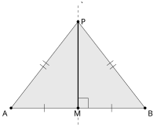
查看 TikZ 原始碼
\begin{document}
\begin{tikzpicture}[scale=1.5]
\coordinate (A) at (-2,0);
\coordinate (B) at (2,0);
\coordinate (M) at (0,0);
\coordinate (P) at (0,2.6);
\fill[gray, opacity=0.18] (A) -- (B) -- (P) -- cycle;
\draw (A) -- (B);
\draw[dashed] (0,-0.5) -- (0,3.1) node[right] {$\ell$};
\draw (P) -- (A) (P) -- (B);
\draw[very thick] (M) -- (P);
\draw (0.3,0) -- (0.3,0.3) -- (0,0.3);
\draw (-1,-0.12) -- (-1,0.12) (1,-0.12) -- (1,0.12);
\draw (-1.052,1.429) -- (-0.862,1.282) (-1.138,1.318) -- (-0.948,1.171);
\draw (0.862,1.282) -- (1.052,1.429) (0.948,1.171) -- (1.138,1.318);
\fill (A) circle (1.2pt) node[below left] {$A$};
\fill (B) circle (1.2pt) node[below right] {$B$};
\fill (M) circle (1.2pt) node[below] {$M$};
\fill (P) circle (1.2pt) node[right] {$P$};
\end{tikzpicture}
\end{document}设
在
图 29-10A：
过 的中点 且 ， 上任取的点 都满足 ；
以单撇标出，粗线 为两三角形的公共边。
反之，设
若
在
若
设
图 29-10B：反之，若
（双撇标出），则底边上的中线 （粗线）即 的垂直平分线，故 落在虚线 上。
查看 TikZ 原始碼
\begin{document}
\begin{tikzpicture}[scale=1.5]
\coordinate (O) at (0,0);
\coordinate (A) at (0.6,1.908);
\coordinate (B) at (-1.908,-0.6);
\coordinate (M) at (-0.654,0.654);
\draw (O) circle (2);
\draw (A) -- (B);
\draw (2.45,-2.45) -- (-2.45,2.45);
\draw[very thick] (O) -- (M);
\draw (-0.5267,0.7813) -- (-0.654,0.9086) -- (-0.7813,0.7813);
\draw[very thick] (O) -- (A);
\draw[very thick] (O) -- (B);
\fill (O) circle (1.2pt) node[below right] {$O$};
\node[above right] at (A) {$A$};
\node[below left] at (B) {$B$};
\node[left] at (M) {$M$};
\node[right] at (2.25,-2.15) {$\ell$};
\end{tikzpicture}
\end{document}一条弦的垂直平分线必经过圆心，如图 29-11 所示。
图 29-11：弦
的垂直平分线 经过圆心 ，即 到 、 等距。
查看 TikZ 原始碼
\begin{document}
\begin{tikzpicture}[scale=1.5]
\coordinate (O) at (0,0);
\coordinate (A) at (200:2);
\coordinate (B) at (340:2);
\coordinate (M) at (0,-0.68);
\draw (O) circle (2);
\draw (A) -- (B);
\draw[dashed] (0,-1.7) -- (0,2.3) node[right] {$\ell$};
\draw[dashed] (O) -- (A) (O) -- (B);
\draw (0.3,-0.68) -- (0.3,-0.38) -- (0,-0.38);
\draw (-0.94,-0.80) -- (-0.94,-0.56) (0.94,-0.80) -- (0.94,-0.56);
\fill (O) circle (1.2pt) node[right] {$O$};
\fill (M) circle (1.2pt) node[below right] {$M$};
\node[below left] at (A) {$A$};
\node[below right] at (B) {$B$};
\end{tikzpicture}
\end{document}设
因为
图 29-12：
，圆心到弦的两端点等距（ 以单撇标出），由引理 必在 的垂直平分线 上。
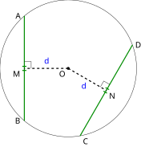
查看 TikZ 原始碼
\begin{document}
\begin{tikzpicture}[scale=1.5]
\coordinate (O) at (0,0);
\draw (O) circle (2);
\coordinate (A) at (130:2);
\coordinate (B) at (230:2);
\coordinate (C) at (280:2);
\coordinate (D) at (20:2);
\coordinate (M) at (-1.2856,0);
\coordinate (N) at (1.1133,-0.6428);
\draw[green!55!black, very thick] (A) -- (B) (C) -- (D);
\draw[dashed, very thick] (O) -- (M) (O) -- (N);
\draw (-1.0856,0) -- (-1.0856,0.2) -- (-1.2856,0.2);
\draw (0.9401,-0.5428) -- (1.0401,-0.3696) -- (1.2133,-0.4696);
\draw[green!55!black, very thick] (-1.3456,0.06) -- (-1.2256,0.06);
\draw[green!55!black, very thick] (-1.3456,-0.06) -- (-1.2256,-0.06);
\draw[green!55!black, very thick] (1.1353,-0.7247) -- (1.0314,-0.6647);
\draw[green!55!black, very thick] (1.1953,-0.6208) -- (1.0914,-0.5608);
\fill (O) circle (1.2pt) node[below left] {$O$};
\node[left] at (A) {$A$};
\node[left] at (B) {$B$};
\node[below right] at (C) {$C$};
\node[right] at (D) {$D$};
\node[below left] at (M) {$M$};
\node[below right] at (N) {$N$};
\node[blue] at (-0.6428,0.22) {$d$};
\node[blue] at (0.4467,-0.5114) {$d$};
\end{tikzpicture}
\end{document}在同一圆或相等的两个圆中，圆心到两条长度相等的弦的弦心距相等（如图 29-13 所示）；反之，若两条弦的弦心距相等，则这两条弦的长度相等。
图 29-13：等弦
（绿色，各带等长的双划标记）到圆心 的距离相等，同为 。
查看 TikZ 原始碼
\begin{document}
\begin{tikzpicture}[scale=1.5]
\coordinate (O) at (0,0);
\draw (O) circle (2);
\coordinate (A) at (170:2);
\coordinate (B) at (50:2);
\coordinate (M) at (110:1);
\coordinate (C) at (210:2);
\coordinate (D) at (330:2);
\coordinate (N) at (270:1);
\draw (A) -- (B) (C) -- (D);
\draw[very thick] (O) -- (M) (O) -- (N);
\draw[dashed] (O) -- (A) (O) -- (B) (O) -- (C) (O) -- (D);
\fill (O) circle (1.2pt) node[right] {$O$};
\node[left] at (A) {$A$};
\node[above right] at (B) {$B$};
\node[above left] at (M) {$M$};
\node[below left] at (C) {$C$};
\node[below right] at (D) {$D$};
\node[above left] at (N) {$N$};
\node[left] at (110:0.5) {$d$};
\node[right] at (270:0.5) {$d$};
\end{tikzpicture}
\end{document}设
图 29-14：
时两弦的弦心距同为 ； 反之，两弦的弦心距相等则弦等长。
相等的两弦可以位于圆心的同侧或异侧。
在直角三角形
同理
若
反之，若
§8.9 学过「弧长与圆心角成正比」。这条正比关系对弧成立，对弦不成立：圆心角加倍，所对的弦并不会加倍。原因是弦把「沿圆走」的距离改成了「走直线」，而直角三角形的斜边与它的对边之间不是倍数关系。
查看 TikZ 原始碼
\begin{document}
\begin{tikzpicture}[scale=1.5]
\coordinate (O) at (0,0);
\coordinate (A) at (240:2);
\coordinate (B) at (300:2);
\draw (O) circle (2);
\draw (O) -- (A) (O) -- (B) (A) -- (B);
\draw (-0.25,-0.43) arc (240:300:0.5);
\node at (0,-0.95) {$60^\circ$};
\node at (-1.30,-0.95) {$r$};
\node at (1.30,-0.95) {$r$};
\node at (0,-2.35) {$AB = r$};
\fill (O) circle (1.2pt) node[above right] {$O$};
\node[below left] at (A) {$A$};
\node[below right] at (B) {$B$};
\end{tikzpicture}
\end{document}查看 TikZ 原始碼
\begin{document}
\begin{tikzpicture}[scale=1.5]
\coordinate (O) at (0,0);
\coordinate (C) at (210:2);
\coordinate (D) at (330:2);
\coordinate (N) at (0,-1);
\draw (O) circle (2);
\draw (O) -- (C) (O) -- (D) (C) -- (D);
\draw[very thick] (O) -- (N);
\draw (-0.43,-0.25) arc (210:330:0.5);
\node at (-0.62,-0.92) {$120^\circ$};
\draw (0.3,-1) -- (0.3,-0.7) -- (0,-0.7);
\node at (0,-2.35) {$CD = \sqrt{3}\,r$};
\fill (O) circle (1.2pt) node[above right] {$O$};
\fill (N) circle (1.2pt) node[below left] {$N$};
\node[below left] at (C) {$C$};
\node[below right] at (D) {$D$};
\end{tikzpicture}
\end{document}同一圆
三角皆相等，
图 29-15A：圆心角
时 ， 等边，弦 。
又
故
图 29-15B：圆心角
时弦心距 （粗线）平分弦， ，不是 。
比较两式：圆心角由
本例中
的值取自 三角学(I) §9.2 的特殊角表；若尚未学到正弦比，可改用毕氏定理：在 中 ，故 ，同样得 。
圆由「圆心＋半径」两个数据决定，而三个不共线的点恰好也能决定这两个数据。这个事实将在四点共圆的判别法中反复使用。
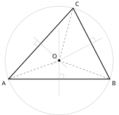
查看 TikZ 原始碼
\begin{document}
\begin{tikzpicture}[scale=1.5]
\coordinate (O) at (0,0);
\coordinate (A) at (200:2.1);
\coordinate (B) at (340:2.1);
\coordinate (C) at (75:2.1);
\draw[black!35] (O) circle (2.1);
\draw[very thick] (A) -- (B) -- (C) -- cycle;
\draw[gray!70] (0,1.25) -- (0,-1.35);
\draw[gray!70] (-0.3544,-0.1846) -- (1.6834,0.8769);
\draw[gray!70] (0.2947,-0.2702) -- (-0.9947,0.9121);
\draw[dashed] (O) -- (A) (O) -- (B) (O) -- (C);
\draw[gray!70] (0.18,-0.7173) -- (0.18,-0.5373) -- (0,-0.5373);
\draw[gray!70] (1.1756,0.8152) -- (1.3353,0.8983) -- (1.4184,0.7386);
\draw[gray!70] (-0.8364,0.5229) -- (-0.9690,0.6445) -- (-0.8474,0.7771);
\fill (O) circle (1.3pt) node[above left] {$O$};
\node[below left] at (A) {$A$};
\node[below right] at (B) {$B$};
\node[above right] at (C) {$C$};
\end{tikzpicture}
\end{document}给定平面上三个不共线的点，有而且只有一个圆经过这三点，如图 29-16 所示。
图 29-16：三条边的垂直平分线交于唯一的点
，以 为圆心、 为半径的圆经过 、 、 。
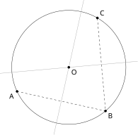
查看 TikZ 原始碼
\begin{document}
\begin{tikzpicture}[scale=1.5]
\coordinate (A) at (205:1.9);
\coordinate (B) at (310:1.9);
\coordinate (C) at (60:1.9);
\coordinate (O) at (0,0);
\draw (O) circle (1.9);
\draw[dashed] (A) -- (B) -- (C);
\draw[gray!70] (77.5:2.3) -- (257.5:2.3);
\draw[gray!70] (5:2.3) -- (185:2.3);
\fill (O) circle (1.2pt) node[below right] {$O$};
\fill (A) circle (1.2pt) node[below left] {$A$};
\fill (B) circle (1.2pt) node[below right] {$B$};
\fill (C) circle (1.2pt) node[above right] {$C$};
\end{tikzpicture}
\end{document}存在性。 设
作
图 29-17：
与 的两条垂直平分线交于 ， ，圆 即过三点的唯一圆。
先说明
若
两直线同过点
以
唯一性。 设圆
则
两直线只有一个交点
经过三点的圆因此唯一。
若三点共线，则
而不相交，不存在经过这三点的圆，这正是定理须排除共线情形的原因。
这条定理管的是存在与唯一，没有给出坐标。用坐标求过三点的圆有两条路：一条是待定系数法（设一般方程、把三点坐标代入，解三元一次方程组），另一条是几何法（用中点公式与垂直线的斜率条件写出两条垂直平分线，再求它们的交点），见 §31.1.4。
查看 TikZ 原始碼
\begin{document}
\begin{tikzpicture}[scale=1.5]
\draw (0,0) circle (1.7);
\draw[very thick] (1.36,-1.02) -- (1.36,1.02);
\draw[very thick] (1.02,-1.36) -- (1.02,1.36);
\draw (-1.7,0) -- (1.7,0);
\fill (0,0) circle (1.2pt) node[below left] {$O$};
\node[right] at (1.36,1.02) {$A$};
\node[right] at (1.36,-1.02) {$B$};
\node[right] at (1.02,1.36) {$C$};
\node[right] at (1.02,-1.36) {$D$};
\draw[<->] (0,-2.05) -- (1.02,-2.05) node[midway, below] {\tiny $6$};
\draw[<->] (1.02,-2.05) -- (1.36,-2.05) node[midway, below] {\tiny $2$};
\draw[<->] (0,-1.75) -- (1.36,-1.75) node[midway, above] {\tiny $8$};
\end{tikzpicture}
\end{document}查看 TikZ 原始碼
\begin{document}
\begin{tikzpicture}[scale=1.5]
\draw (0,0) circle (1.7);
\draw[very thick] (1.36,-1.02) -- (1.36,1.02);
\draw[very thick] (-1.02,-1.36) -- (-1.02,1.36);
\draw (-1.7,0) -- (1.7,0);
\fill (0,0) circle (1.2pt) node[below] {$O$};
\node[right] at (1.36,1.02) {$A$};
\node[right] at (1.36,-1.02) {$B$};
\node[left] at (-1.02,1.36) {$C$};
\node[left] at (-1.02,-1.36) {$D$};
\draw[<->] (0,-1.75) -- (1.36,-1.75) node[midway, above] {\tiny $8$};
\draw[<->] (-1.02,-1.75) -- (0,-1.75) node[midway, above] {\tiny $6$};
\draw[<->] (-1.02,-2.05) -- (1.36,-2.05) node[midway, below] {\tiny $14$};
\end{tikzpicture}
\end{document}圆
设
两弦可在圆心的同侧，也可在异侧（如图 29-18A、图 29-18B 所示），故须分情况：
(a) 同侧：
图 29-18A：两弦在圆心同侧。
弦心距分别为
与 ，两弦之间的距离 。
(b) 异侧：
图 29-18B：两弦在圆心异侧。
此时两弦之间的距离
。
两弦之间的距离为
题目只说「两平行弦」而未指定位置时，两种情形都须写出，这是漏解的高发处。
29.1.2 圆上的角（Angles in a Circle）
弧与弦的关系是「形」的关系，把角引进圆里，才能得到本章真正的主力工具。圆上的角按顶点的位置分两类。
查看 TikZ 原始碼
\begin{document}
\begin{tikzpicture}[scale=1.5]
\draw (0,0) circle (2);
\coordinate (A) at (200:2);
\coordinate (B) at (335:2);
\draw (90:2) -- (A) (90:2) -- (B);
\draw[dashed] (0,0) -- (A) (0,0) -- (B);
\draw (200:0.55) arc (200:335:0.55);
\fill (0,0) circle (1.2pt) node[right] {$O$};
\node[below left] at (A) {$A$};
\node[below right] at (B) {$B$};
\node[above] at (90:2) {$P$};
\node at (270:0.92) {$\angle AOB$};
\node at (0,1.4) {$\angle APB$};
\end{tikzpicture}
\end{document}查看 TikZ 原始碼
\begin{document}
\begin{tikzpicture}[scale=1.5]
\coordinate (O) at (0,0);
\draw (O) circle (2);
\coordinate (A) at (110:2);
\coordinate (B) at (250:2);
\coordinate (P) at (180:2);
\draw (P) -- (A) (P) -- (B);
\draw[dashed] (O) -- (A) (O) -- (B);
\draw[->] (O) ++(250:0.62) arc (250:470:0.62);
\node at (0.95,0.06) {$\angle AOB$};
\draw (P) ++(305:0.45) arc (305:415:0.45);
\node at (-1.2,0.22) {$\angle APB$};
\fill (O) circle (1.2pt) node[below right] {$O$};
\node[above right] at (A) {$A$};
\node[below right] at (B) {$B$};
\node[above] at (P) {$P$};
\end{tikzpicture}
\end{document}- 顶点在圆心、两边都是半径的角称为圆心角（Angle at the Centre）；
- 顶点在圆周上、两边都是弦的角称为圆周角（Angle at the Circumference）。
设
图 29-19A：弦
把圆周分成两段弧，不含 的一段即圆周角 所对的弧。 该弧所对的圆心角是
。
若所对的弧为优弧，则相应的圆心角取反角（Reflex Angle，即 §8.1 中介于
图 29-19B：
落在劣弧上时， 所对的弧是优弧 。 带箭头的角是这个优弧所对的圆心角，即大于
的反角 。
圆心角与圆周角之间的定量关系是整章的枢纽。
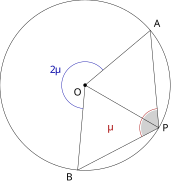
查看 TikZ 原始碼
\begin{document}
\begin{tikzpicture}[scale=1.5]
\coordinate (O) at (0,0);
\draw (O) circle (2);
\coordinate (A) at (40:2);
\coordinate (B) at (265:2);
\coordinate (P) at (330:2);
\draw (O) -- (A) (O) -- (B) (O) -- (P);
\draw (A) -- (P) (B) -- (P);
\draw[blue!65!black] (40:0.55) arc (40:265:0.55);
\node[blue!65!black] at (152.5:0.8) {$2\theta$};
\draw[red!65!black] (P) ++(207.5:0.45) arc (207.5:95:0.45);
\node[red!65!black] at (0.5822,-0.9799) {$\theta$};
\begin{scope}
\clip (P) circle (0.42);
\fill[black, opacity=0.18] (P) -- ++(207.5:0.45) arc (207.5:95:0.45) -- cycle;
\end{scope}
\fill (O) circle (1.2pt) node[below left] {$O$};
\node[above right] at (A) {$A$};
\node[below left] at (B) {$B$};
\node[right] at (P) {$P$};
\end{tikzpicture}
\end{document}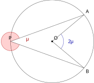
查看 TikZ 原始碼
\begin{document}
\begin{tikzpicture}[scale=1.5]
\coordinate (O) at (0,0);
\draw (O) circle (2);
\coordinate (A) at (40:2);
\coordinate (B) at (320:2);
\coordinate (P) at (180:2);
\draw (O) -- (A) (O) -- (B);
\draw (A) -- (P) (B) -- (P);
\draw[blue!65!black] (O) ++(320:0.55) arc (320:400:0.55);
\node[blue!65!black] at (0.88,0) {$2\theta$};
\draw[red!65!black] (P) ++(340:0.45) arc (340:20:0.45);
\fill[red, opacity=0.18] (P) -- ++(340:0.45) arc (340:20:0.45) -- cycle;
\node[red!65!black] at (-1.2,0.12) {$\theta$};
\fill (O) circle (1.2pt) node[above right] {$O$};
\node[above right] at (A) {$A$};
\node[below right] at (B) {$B$};
\node[above] at (P) {$P$};
\end{tikzpicture}
\end{document}在同圆中，一段弧所对的圆心角是这段弧所对的圆周角的两倍：
（如图 29-20A、图 29-20B 所示）
图 29-20A：所对的弧
（不含 ）是优弧，圆心角取带箭头的反角，仍有 。
图 29-20B：所对的弧是劣弧时圆心角不大于
，结论 照旧。
查看 TikZ 原始碼
\begin{document}
\begin{tikzpicture}[scale=1.5]
\draw (0,0) circle (2);
\coordinate (A) at (200:2);
\coordinate (B) at (335:2);
\draw[dashed] (0,2) -- (0,-2);
\draw (0,2) -- (A) (0,2) -- (B);
\draw[dotted] (0,0) -- (A) (0,0) -- (B);
\fill (0,0) circle (1.2pt) node[right] {$O$};
\node[below left] at (A) {$A$};
\node[below right] at (B) {$B$};
\node[above] at (0,2) {$P$};
\node[below] at (0,-2) {$Q$};
\node at (-0.2,1.42) {$\alpha$};
\node at (0.2239,1.232) {$\beta$};
\end{tikzpicture}
\end{document}查看 TikZ 原始碼
\begin{document}
\begin{tikzpicture}[scale=1.5]
\draw (0,0) circle (2);
\coordinate (A) at (200:2);
\coordinate (B) at (300:2);
\draw[dashed] (170:2) -- (350:2);
\draw (170:2) -- (A) (170:2) -- (B);
\draw[dotted] (0,0) -- (A) (0,0) -- (B);
\fill (0,0) circle (1.2pt) node[above] {$O$};
\node[above left] at (A) {$A$};
\node[below right] at (B) {$B$};
\node[above left] at (170:2) {$P$};
\node[below right] at (350:2) {$Q$};
\node at (-1.55,-0.32) {$\alpha$};
\node at (-1.139,0.003) {$\beta$};
\end{tikzpicture}
\end{document}查看 TikZ 原始碼
\begin{document}
\begin{tikzpicture}[scale=1.5]
\draw (0,0) circle (2);
\coordinate (A) at (200:2);
\coordinate (B) at (335:2);
\draw[dashed] (20:2) -- (200:2);
\draw (20:2) -- (B);
\draw[dotted] (0,0) -- (B);
\fill (0,0) circle (1.2pt) node[above right] {$O$};
\node[below left] at (200:2) {$A$};
\node[below right] at (B) {$B$};
\node[above right] at (20:2) {$P$};
\node at (1.45,0.15) {$\beta$};
\end{tikzpicture}
\end{document}查看 TikZ 原始碼
\begin{document}
\begin{tikzpicture}[scale=1.5]
\draw (0,0) circle (2);
\coordinate (A) at (200:2);
\coordinate (B) at (335:2);
\coordinate (P) at (270:2);
\coordinate (Q) at (90:2);
\draw[dashed] (P) -- (Q);
\draw (P) -- (A) (P) -- (B);
\draw[dotted] (0,0) -- (A) (0,0) -- (B);
\draw[->] (0,0) ++(335:0.62) arc (335:560:0.62);
\node at (0.95,0.05) {$2\alpha+2\beta$};
\node at (-0.276,-1.446) {$\alpha$};
\node at (0.289,-1.441) {$\beta$};
\fill (0,0) circle (1.2pt) node[right] {$O$};
\node[below left] at (A) {$A$};
\node[below right] at (B) {$B$};
\node[below] at (P) {$P$};
\node[above] at (Q) {$Q$};
\end{tikzpicture}
\end{document}设
作射线
按圆心
每种情形各自用完等腰三角形与外角定理，各自收在本情形的结论上。
情况 1（
由
又
同理，由
此时射线
图 29-21A：情况 1。
在 的内部， 。 虚线
是直径，点线 、 是两个等腰三角形的腰。
情况 2（
记
由
由
此时
图 29-21B：情况 2。
在 的外部， 。 虚线
是直径，点线 、 是两个等腰三角形的腰。
情况 3（
由
图 29-21C：情况 3。
在边 上，即 为直径，此时 、 。
情况 4（
仍作直径
记
由
由
按定义，
图 29-22：情况 4。
落在劣弧 上，故 所对的弧是优弧。 带箭头的角是经过
的反角 ，它等于 。
四种情形已穷尽
所对的弧或是劣弧、或是优弧（恰为半圆时两者合一，结论显然）。 故在同圆中，一段弧所对的圆心角恒为该弧所对圆周角的两倍。
圆心角定理第一条立即可用的推论，是倒角题中使用频率最高的一条。
查看 TikZ 原始碼
\begin{document}
\begin{tikzpicture}[scale=1.5]
\draw (0,0) circle (2);
\coordinate (A) at (200:2);
\coordinate (B) at (335:2);
\draw (A) -- (B);
\draw (60:2) -- (A) (60:2) -- (B);
\draw (115:2) -- (A) (115:2) -- (B);
\node[below left] at (A) {$A$};
\node[below right] at (B) {$B$};
\node[above right] at (60:2) {$P$};
\node[above left] at (115:2) {$Q$};
\node at (1.05,1.35) {$\theta$};
\node at (-0.85,1.2) {$\theta$};
\end{tikzpicture}
\end{document}在同圆中，同一段弧所对的圆周角彼此相等。设
图 29-23：
、 在弦 的同一侧， 。
由圆心角定理，
「同弓形内的圆周角」这一名称来自弓形的划分：弦
把圆面分成两个弓形，顶点在同一弓形内的圆周角张向同一段弧，故彼此相等；顶点落在另一个弓形内时张向另一段弧，与本组一般不再相等。两侧的关系由 §29.1.3 的对角互补给出。
查看 TikZ 原始碼
\begin{document}
\begin{tikzpicture}[scale=1.5]
\draw (0,0) circle (2);
\draw (-2,0) -- (2,0);
\draw (60:2) -- (-2,0) (60:2) -- (2,0);
\draw (250:2) -- (-2,0) (250:2) -- (2,0);
\draw (-0.8102,-1.6992) -- (-0.63,-1.573) -- (-0.5038,-1.7532);
\draw (0.81,1.62) -- (0.92,1.43) -- (1.11,1.54);
\fill (0,0) circle (1.2pt) node[below] {$O$};
\node[left] at (-2,0) {$A$};
\node[right] at (2,0) {$B$};
\node[above right] at (60:2) {$P$};
\node[below left] at (250:2) {$P'$};
\end{tikzpicture}
\end{document}直径所对的圆周角为直角。若
图 29-24：
为直径时，圆周上任一点（ 或 ）对 的张角皆为 ； 反之，若张角为
，则 必为直径。
由圆心角定理
查看 TikZ 原始碼
\begin{document}
\begin{tikzpicture}[scale=1.5]
\coordinate (O) at (0,0);
\draw (O) circle (2);
\coordinate (A) at (315:2);
\coordinate (B) at (135:2);
\coordinate (P) at (90:2);
\draw[very thick] (A) -- (B);
\draw (P) -- (A) (P) -- (B);
\draw (P) -- ++(0.1148,-0.2772) -- ++(-0.2772,-0.1148) -- ++(-0.1148,0.2772);
\fill (O) circle (1.2pt) node[below left] {$O$};
\node[below left] at (A) {$A$};
\node[above left] at (B) {$B$};
\node[above] at (P) {$P$};
\end{tikzpicture}
\end{document}若圆周角
图 29-25：圆周角
时，它所对的弦 经过圆心 ，即 是该圆的直径。
记
由圆心角定理（如图 29-24 所示），
后一条推论给出「从直角跳到圆心」的路线：题中一旦出现
且 、 、 同在一张圆上，即可断定 为直径，圆心就是 的中点。这一点在 §29.3 的外心处会再次用到。
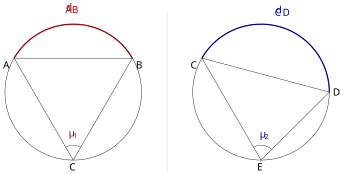
查看 TikZ 原始碼
\begin{document}
\begin{tikzpicture}[scale=1.5]
\coordinate (O) at (0,0);
\coordinate (O2) at (4.4,0);
\draw (O) circle (1.6);
\draw (O2) circle (1.6);
\coordinate (A) at (150:1.6);
\coordinate (B) at (30:1.6);
\coordinate (C) at (270:1.6);
\draw (A) -- (B);
\draw[red!65!black, very thick] (150:1.6) arc (150:30:1.6);
\draw (C) -- (A) (C) -- (B);
\draw[red!65!black] (C) ++(60:0.35) arc (60:120:0.35);
\node[red!65!black] at (-0,-0.98) {$\theta_1$};
\node[red!65!black] at (90:1.98) {$\widehat{AB}$};
\node[below left] at (A) {$A$};
\node[below right] at (B) {$B$};
\node[below] at (C) {$C$};
\draw[gray!40] (2.2,-1.9) -- (2.2,1.9);
\begin{scope}[shift={(O2)}]
\draw (150:1.6) -- (0:1.6);
\draw[blue!65!black, very thick] (150:1.6) arc (150:0:1.6);
\draw (270:1.6) -- (150:1.6) (270:1.6) -- (0:1.6);
\draw[blue!65!black] (270:1.6) ++(45:0.35) arc (45:120:0.35);
\node[blue!65!black] at (0.0783,-1.0051) {$\theta_2$};
\node[blue!65!black] at (75:1.98) {$\widehat{CD}$};
\node[below left] at (150:1.6) {$C$};
\node[right] at (0:1.6) {$D$};
\node[below] at (270:1.6) {$E$};
\end{scope}
\end{tikzpicture}
\end{document}在同圆中，两段弧所对的圆周角之比等于这两段弧的长度之比，如图 29-26 所示。
图 29-26：两段弧
、 所对的圆周角 、 之比等于两弧长度之比。
查看 TikZ 原始碼
\begin{document}
\begin{tikzpicture}[scale=1.5]
\coordinate (O) at (0,0);
\coordinate (P) at (95:2);
\coordinate (A) at (200:2);
\coordinate (B) at (260:2);
\coordinate (C) at (320:2);
\draw (O) circle (2);
\draw (P) -- (A) (P) -- (B) (P) -- (C);
\draw (-0.4039,1.5452) arc (242.5:272.5:0.5);
\draw (-0.1525,1.4929) arc (272.5:302.5:0.5);
\node at (-0.3474,1.2116) {$\alpha$};
\node at (0.0663,1.2302) {$\alpha$};
\draw (-1.2213,-1.4555) -- (-1.3499,-1.6087);
\draw (0.7182,-1.7854) -- (0.6498,-1.9734);
\fill (O) circle (1.2pt) node[below] {$O$};
\node[above] at (P) {$P$};
\node[below left] at (A) {$A$};
\node[below] at (B) {$B$};
\node[below right] at (C) {$C$};
\end{tikzpicture}
\end{document}设两段弧所对的圆心角依次为
由 §8.9 的「弧长与圆心角成正比」，两段弧的长度之比即
两比相同（如图 29-27 所示），推论成立。
图 29-27：
与 等长（弧上单撇），两段所对的圆周角同为 ； 弧长成倍（
），圆周角也成倍（ ）。
这条推论把弧的倍数关系与角的倍数关系打通：若
，则 ，且同圆中两段弧所对的圆周角也成两倍关系。它与 §29.1.1 的警告并不矛盾：与角成正比的是弧，不是弦。
查看 TikZ 原始碼
\begin{document}
\begin{tikzpicture}[scale=1.5]
\draw (0,0) circle (2);
\coordinate (A) at (200:2);
\coordinate (B) at (330:2);
\draw[dotted] (0,0) -- (A) (0,0) -- (B);
\draw (80:2) -- (A) (80:2) -- (B);
\draw (265:2) -- (A) (265:2) -- (B);
\draw (200:0.5) arc (200:330:0.5);
\fill (0,0) circle (1.2pt) node[above right] {$O$};
\node[above left] at (A) {$A$};
\node[above right] at (B) {$B$};
\node[above] at (80:2) {$D$};
\node[below] at (265:2) {$C$};
\node at (258:1.1) {$130^\circ$};
\end{tikzpicture}
\end{document}圆
图 29-28：
张向劣弧， 张向优弧，两角互补。
故
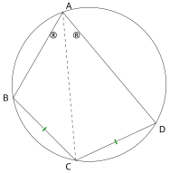
查看 TikZ 原始碼
\begin{document}
\begin{tikzpicture}[scale=1.5]
\draw (0,0) circle (2);
\coordinate (A) at (110:2);
\coordinate (B) at (190:2);
\coordinate (C) at (260:2);
\coordinate (D) at (330:2);
\draw (A) -- (B) -- (C) -- (D) -- cycle;
\draw[dashed] (A) -- (C);
\node[above right] at (A) {$A$};
\node[left] at (B) {$B$};
\node[below left] at (C) {$C$};
\node[below right] at (D) {$D$};
\node at (-0.95,1.25) {$\alpha$};
\node at (-0.35,1.25) {$\alpha$};
\draw[green!55!black, very thick] (-1.208,-1.208) -- (-1.109,-1.109);
\draw[green!55!black, very thick] (0.722,-1.5482) -- (0.6628,-1.4214);
\end{tikzpicture}
\end{document}四边形
图 29-29：
平分 时，弦 与 各有一划标记（所对的弧 、 也相等），故 。
因
两段弧所对的圆心角相等，由 §8.9「弧长与圆心角成正比」得
29.1.3 圆内接四边形与四点共圆（Cyclic Quadrilaterals and Concyclic Points）
上节末的示例已经出现一个现象：同一条弦两侧的两个圆周角互补。把它写成一般形式，就是圆内接四边形的理论。
查看 TikZ 原始碼
\begin{document}
\begin{tikzpicture}[scale=1.5]
\coordinate (O) at (0,0);
\coordinate (A) at (120:2);
\coordinate (B) at (210:2);
\coordinate (C) at (300:2);
\coordinate (D) at (25:2);
\draw (O) circle (2);
\draw (A) -- (B) -- (C) -- (D) -- cycle;
\node at (-0.70,1.19) {$\angle A$};
\node at (0.70,-1.19) {$\angle C$};
\node at (-1.13,-0.84) {$\angle B$};
\node at (1.26,0.56) {$\angle D$};
\fill (O) circle (1.2pt) node[below right] {$O$};
\node[above left] at (A) {$A$};
\node[below left] at (B) {$B$};
\node[below right] at (C) {$C$};
\node[above right] at (D) {$D$};
\end{tikzpicture}
\end{document}四个顶点都在同一个圆上的四边形称为圆内接四边形（Cyclic Quadrilateral），这个圆称为该四边形的外接圆（Circumscribed Circle）。
设四边形
图 29-30：四边形
内接于圆 ，这个圆称为它的外接圆；
与 、 与 是两对对角。
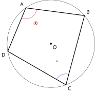
查看 TikZ 原始碼
\begin{document}
\begin{tikzpicture}[scale=1.5]
\coordinate (O) at (0,0);
\draw (O) circle (2);
\coordinate (A) at (125:2);
\coordinate (B) at (40:2);
\coordinate (C) at (-70:2);
\coordinate (D) at (-170:2);
\draw[very thick] (A) -- (B) -- (C) -- (D) -- cycle;
\draw[red!65!black] (A) ++(247.5:0.5) arc (247.5:352.5:0.5);
\node[red!65!black] at (-0.7222,0.9022) {$\alpha$};
\draw[blue!65!black] (C) ++(75:0.5) arc (75:150:0.5);
\node[blue!65!black] at (0.2822,-0.9093) {$\gamma$};
\fill (O) circle (1.2pt) node[below right] {$O$};
\node[above left] at (A) {$A$};
\node[above right] at (B) {$B$};
\node[below right] at (C) {$C$};
\node[below left] at (D) {$D$};
\end{tikzpicture}
\end{document}圆内接四边形的对角互补：
（如图 29-31 所示）
图 29-31：圆内接四边形
，对角 与 互补。
查看 TikZ 原始碼
\begin{document}
\begin{tikzpicture}[scale=1.5]
\coordinate (O) at (0,0);
\draw (O) circle (2);
\coordinate (A) at (115:2);
\coordinate (B) at (200:2);
\coordinate (C) at (285:2);
\coordinate (D) at (25:2);
\draw (A) -- (B) -- (C) -- (D) -- cycle;
\draw[dashed] (O) -- (B) (O) -- (D);
\node at (118:1.35) {$\angle A$};
\node at (282:1.35) {$\angle C$};
\fill (O) circle (1.2pt) node[above right] {$O$};
\node[above left] at (A) {$A$};
\node[below left] at (B) {$B$};
\node[below] at (C) {$C$};
\node[above right] at (D) {$D$};
\end{tikzpicture}
\end{document}查看 TikZ 原始碼
\begin{document}
\begin{tikzpicture}[scale=1.5]
\coordinate (O) at (0,0);
\coordinate (A) at (115:2);
\coordinate (B) at (200:2);
\coordinate (C) at (285:2);
\coordinate (D) at (25:2);
\draw (O) circle (2);
\draw (A) -- (B) -- (C) -- (D) -- cycle;
\draw[dashed] (O) -- (B) (O) -- (D);
\draw[->] (-0.56,-0.21) arc (200:385:0.6);
\draw (0.54,0.25) arc (25:200:0.6);
\node at (0.38,-0.95) {$2\angle A$};
\node at (-0.41,0.99) {$2\angle C$};
\fill (O) circle (1.2pt) node[right] {$O$};
\node[above left] at (A) {$A$};
\node[below left] at (B) {$B$};
\node[below] at (C) {$C$};
\node[above right] at (D) {$D$};
\end{tikzpicture}
\end{document}设四边形
连接
由圆心角定理，
两式相加，
两端同除以
连接
图 29-32A：连接
、 （虚线）。
张向含 的弧 ， 张向含 的弧 。
图 29-32B：标
的是 的非反角，带箭头标 的是它的反角。 两个角同以
、 为边，合成周角 。
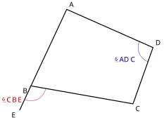
查看 TikZ 原始碼
\begin{document}
\begin{tikzpicture}[scale=1.5]
\coordinate (A) at (110:2);
\coordinate (B) at (200:2);
\coordinate (C) at (320:2);
\coordinate (D) at (2.2,0.6);
\coordinate (E) at (-2.258,-1.5);
\draw[very thick] (A) -- (B) -- (C) -- (D) -- cycle;
\draw[very thick] (B) -- (E);
\draw[red!65!black] (B) ++(245:0.5) arc (245:350:0.5);
\node[red!65!black,left] at (-2.05,-1.15) {$\angle CBE$};
\draw[blue!65!black] (D) ++(156.1:0.5) arc (156.1:250.5:0.5);
\node[blue!65!black] at (1.28,0.2) {$\angle ADC$};
\node[above right] at (A) {$A$};
\node[below left] at (B) {$B$};
\node[below right] at (C) {$C$};
\node[above right] at (D) {$D$};
\node[below left] at (E) {$E$};
\end{tikzpicture}
\end{document}- 沿用 §8.3 多边形外角的说法：把多边形的一条边沿一个方向延长，延长线与相邻一边所夹的角，称为多边形在该顶点处的外角（Exterior Angle）。
- 四边形
上例中
图 29-33：四边形
中延长 至 。 红色角
是顶点 处的外角，蓝色角 是它的内对角。
外角与内对角都定了，下面的定理说的就是这两个角的关系。
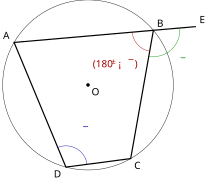
查看 TikZ 原始碼
\begin{document}
\begin{tikzpicture}[scale=1.5]
\coordinate (O) at (0,0);
\draw (O) circle (2);
\coordinate (A) at (150:2);
\coordinate (B) at (40:2);
\coordinate (C) at (-60:2);
\coordinate (D) at (255:2);
\coordinate (E) at (2.5283,1.3727);
\draw[very thick] (A) -- (B) -- (C) -- (D) -- cycle;
\draw[very thick] (B) -- (E);
\draw[red!65!black] (B) ++(185:0.5) arc (185:260:0.5);
\node[red!65!black] at (0.6474,0.4749) {$(180^{\circ}-\beta)$};
\draw[blue!65!black] (D) ++(7.5:0.5) arc (7.5:112.5:0.5);
\node[blue!65!black] at (-0.0426,-1.1091) {$\beta$};
\draw[green!55!black] (B) ++(260:0.62) arc (260:365:0.62);
\node[green!55!black] at (2.2415,0.5114) {$\beta$};
\fill (O) circle (1.2pt) node[below right] {$O$};
\node[above left] at (A) {$A$};
\node[above right] at (B) {$B$};
\node[below right] at (C) {$C$};
\node[below left] at (D) {$D$};
\node[above right] at (E) {$E$};
\end{tikzpicture}
\end{document}圆内接四边形的任一外角等于它的内对角。延长
（如图 29-34 所示）
图 29-34：延长
至 ，圆内接四边形 在顶点 处的外角 等于内对角 。
查看 TikZ 原始碼
\begin{document}
\begin{tikzpicture}[scale=1.5]
\coordinate (O) at (0,0);
\coordinate (A) at (190:2);
\coordinate (B) at (320:2);
\coordinate (C) at (55:2);
\coordinate (D) at (100:2);
\coordinate (E) at (2.69,-1.6);
\draw (O) circle (2);
\draw (A) -- (B) -- (C) -- (D) -- cycle;
\draw (B) -- (E);
\draw (1.48,-0.87) arc (97.5:-15:0.42);
\draw (-0.59,1.63) arc (-125:-12.5:0.42);
\node at (2.04,-0.84) {$\gamma$};
\node at (-0.10,1.34) {$\gamma$};
\fill (O) circle (1.2pt) node[below right] {$O$};
\node[below left] at (A) {$A$};
\node[below] at (B) {$B$};
\node[above right] at (C) {$C$};
\node[above left] at (D) {$D$};
\node[right] at (E) {$E$};
\end{tikzpicture}
\end{document}图 29-35：
在 的延长线上。 外角
与内对角 同为 ，因为它们都与 互补。
对角互补的用处不限于求角。若图中出现
这样的条件而没有圆，先反过来问一句「这四点是否共圆」，往往比硬算角度更能打开局面。这就是下面的判别法。
查看 TikZ 原始碼
\begin{document}
\begin{tikzpicture}[scale=1.5]
\draw (0,0) circle (2);
\coordinate (A) at (90:2);
\coordinate (B) at (180:2);
\coordinate (C) at (260:2);
\coordinate (D) at (20:2);
\draw (A) -- (B) -- (C) -- (D) -- cycle;
\draw (A) -- (C) (B) -- (D);
\node[above] at (A) {$A$};
\node[left] at (B) {$B$};
\node[below left] at (C) {$C$};
\node[right] at (D) {$D$};
\node at (-0.26,1.44) {$40^\circ$};
\node at (0.26,1.44) {$60^\circ$};
\node at (-1.45,0.29) {$35^\circ$};
\fill (-0.146,0.326) circle (1.3pt);
\node at (-0.36,0.1) {$X$};
\end{tikzpicture}
\end{document}圆内接四边形
图 29-36：对角线交于
；
、 、 。
(a)
(a) 点
(b) 因
在
又
检验：(b)、(c) 与已知数据应自洽。
，而 与 同张弧 ，两者确实同为 。
四点共圆的判别（Tests for Concyclic Points）
有了性质，接着问反面问题：凭什么断定四点共圆？这一组判别法是演绎几何证明题的主力工具：图中常常并没有圆，却有一对角相等或互补，此时先问一句「这四点共圆吗」，往往比硬算角度更能打开局面。判别法一共有三条，思路都是同一法：先作过其中三点的圆，再证明第四点落在这个圆上。
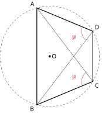
查看 TikZ 原始碼
\begin{document}
\begin{tikzpicture}[scale=1.5]
\coordinate (O) at (0,0);
\draw[dashed] (O) circle (2);
\coordinate (A) at (105:2);
\coordinate (B) at (255:2);
\coordinate (C) at (330:2);
\coordinate (D) at (30:2);
\draw[very thick] (A) -- (B) -- (C) -- (D) -- cycle;
\draw (A) -- (C) (B) -- (D);
\draw[red!65!black] (C) ++(202.5:0.45) arc (202.5:127.5:0.45);
\node[red!65!black] at (0.9593,-0.7929) {$\theta$};
\draw[red!65!black] (D) ++(232.5:0.45) arc (232.5:157.5:0.45);
\node[red!65!black] at (0.9593,0.7929) {$\theta$};
\fill (O) circle (1.2pt) node[right] {$O$};
\node[above left] at (A) {$A$};
\node[below left] at (B) {$B$};
\node[below right] at (C) {$C$};
\node[above right] at (D) {$D$};
\end{tikzpicture}
\end{document}设
图 29-37：
、 在直线 的同侧， 。 虚线圆是结论要断言存在的那个圆，
为其圆心；粗实线是四边形 的四条边，细实线是它的两条对角线。
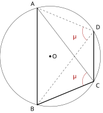
查看 TikZ 原始碼
\begin{document}
\begin{tikzpicture}[scale=1.5]
\coordinate (O) at (0,0);
\draw (O) circle (2);
\coordinate (A) at (105:2);
\coordinate (B) at (255:2);
\coordinate (C) at (330:2);
\coordinate (D) at (30:2);
\draw[very thick] (A) -- (B) -- (C) -- (D);
\draw[dashed] (D) -- (A);
\draw (A) -- (C);
\draw[dashed] (B) -- (D);
\draw[red!65!black] (C) ++(202.5:0.45) arc (202.5:127.5:0.45);
\node[red!65!black] at (0.9593,-0.7929) {$\theta$};
\draw[red!65!black] (D) ++(232.5:0.45) arc (232.5:157.5:0.45);
\node[red!65!black] at (0.9593,0.7929) {$\theta$};
\fill (O) circle (1.2pt) node[right] {$O$};
\node[above left] at (A) {$A$};
\node[below left] at (B) {$B$};
\node[below right] at (C) {$C$};
\node[above right] at (D) {$D$};
\end{tikzpicture}
\end{document}查看 TikZ 原始碼
\begin{document}
\begin{tikzpicture}[scale=1.5]
\coordinate (A) at (205:2);
\coordinate (B) at (335:2);
\coordinate (C) at (95:2);
\coordinate (E) at (33.5411:2);
\coordinate (D) at (2.55,1.6);
\draw (0,0) circle (2);
\draw (D) -- (A);
\draw[dashed] (C) -- (A) (C) -- (B);
\draw[dashed] (E) -- (B);
\node at (1.78,1.46) {$E$};
\node[below left] at (A) {$A$};
\node[below right] at (B) {$B$};
\node[above left] at (C) {$C$};
\node[right] at (D) {$D$};
\end{tikzpicture}
\end{document}查看 TikZ 原始碼
\begin{document}
\begin{tikzpicture}[scale=1.5]
\coordinate (A) at (205:2);
\coordinate (B) at (335:2);
\coordinate (C) at (95:2);
\coordinate (F) at (35:2);
\coordinate (D) at (-0.26,0.05);
\draw (0,0) circle (2);
\draw (A) -- (B) -- (C) -- cycle;
\draw (A) -- (D);
\draw[dashed] (D) -- (F);
\draw[dashed] (B) -- (F);
\draw (B) -- (D);
\node[below left] at (A) {$A$};
\node[below right] at (B) {$B$};
\node[above left] at (C) {$C$};
\node[above right] at (F) {$F$};
\node[above] at (D) {$D$};
\end{tikzpicture}
\end{document}因
以下证明
反设
图 29-38：过
、 、 三点的圆 已经作出（实线圆）， 是其圆心。 虚线的
才是本节要安置的角：待证之事是点 落在 上。
情形 1：
因为
另一方面，
图 29-39A：临时假设
在圆外，线段 与圆周交于 ，虚线 为辅助线。
与 同张弧 ； 又是 在 处的外角。
情形 2：
而
图 29-39B：临时假设
在圆内，延长 交圆周于 ，虚线 、 为辅助线。
是 在 处的外角，故大于内角 。
两个临时假设都被否定，而点与圆的位置只有「在圆上、在圆内、在圆外」三种，故
上面两条「线段与圆周必有交点」的步骤用到一条直观事实：圆是凸的闭曲线，连结圆上一点与圆外（圆内）一点的线段必与圆周再次相交。严格论证需要「连续性」一类的事实，超出中学范围；本讲义对此按既定事实处理，立场与 §8.9 中「弧长与圆心角成正比」不作证明而直接使用相同。
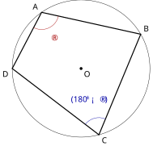
查看 TikZ 原始碼
\begin{document}
\begin{tikzpicture}[scale=1.5]
\coordinate (O) at (0,0);
\draw (O) circle (2);
\coordinate (A) at (125:2);
\coordinate (B) at (30:2);
\coordinate (C) at (-75:2);
\coordinate (D) at (180:2);
\draw[very thick] (A) -- (B) -- (C) -- (D) -- cycle;
\draw[red!65!black] (A) ++(242.5:0.5) arc (242.5:347.5:0.5);
\node[red!65!black] at (-0.7879,0.8679) {$\alpha$};
\draw[blue!65!black] (C) ++(67.5:0.5) arc (67.5:142.5:0.5);
\node[blue!65!black] at (0.2459,-0.9176) {$(180^{\circ}-\alpha)$};
\fill (O) circle (1.2pt) node[below right] {$O$};
\node[above left] at (A) {$A$};
\node[above right] at (B) {$B$};
\node[below right] at (C) {$C$};
\node[below left] at (D) {$D$};
\end{tikzpicture}
\end{document}凸四边形
图 29-40：凸四边形
中一对对角互补（ ， ），则 、 、 、 四点共圆。
查看 TikZ 原始碼
\begin{document}
\begin{tikzpicture}[scale=1.5]
\coordinate (A) at (120:2);
\coordinate (B) at (210:2);
\coordinate (C) at (300:2);
\coordinate (D) at (2.898,-0.776);
\coordinate (E) at (1.9907,-0.1922);
\draw (0,0) circle (2);
\draw (A) -- (B) -- (C) -- (D) -- cycle;
\draw[dashed] (C) -- (E);
\node at (2.5543,-0.8724) {$\beta$};
\node at (1.3848,-0.3237) {$\beta$};
\node[above left] at (A) {$A$};
\node[below left] at (B) {$B$};
\node[below right] at (C) {$C$};
\node[below] at (D) {$D$};
\node at (2.28,-0.13) {$E$};
\end{tikzpicture}
\end{document}查看 TikZ 原始碼
\begin{document}
\begin{tikzpicture}[scale=1.5]
\coordinate (A) at (120:2);
\coordinate (B) at (210:2);
\coordinate (C) at (300:2);
\coordinate (D) at (0.646,-0.373);
\coordinate (F) at (1.4398,-1.3882);
\draw (0,0) circle (2);
\draw (A) -- (B) -- (C) -- (D) -- cycle;
\draw[dashed] (D) -- (F);
\draw[dashed] (C) -- (F);
\node at (-0.2056,-0.7941) {$\beta$};
\node at (0.8244,-1.3129) {$\beta$};
\node[above left] at (A) {$A$};
\node[below left] at (B) {$B$};
\node[below right] at (C) {$C$};
\node[above right] at (D) {$D$};
\node[below] at (F) {$F$};
\end{tikzpicture}
\end{document}设凸四边形
这是本证明唯一的假设。
由四边形内角和为
凸四边形的两个顶点
以下证明
反设
情形 1：
因
由对角互补定理，
另一方面，
图 29-41A：临时假设
在 外，线段 与圆周交于 ，虚线 为辅助线。 两处
分别是 与 ；前者又是 在 处的外角。
情形 2：
而
图 29-41B：临时假设
在 内，延长 交圆周于 ，虚线 、 为辅助线。 两处
分别是 与 ；后者又是 在 处的外角。
两个临时假设都被否定，而点与圆的位置只有「在圆上、在圆内、在圆外」三种，故
若给定的是另一对对角互补（
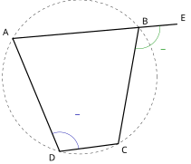
查看 TikZ 原始碼
\begin{document}
\begin{tikzpicture}[scale=1.5]
\coordinate (O) at (0,0);
\draw[dashed] (O) circle (2);
\coordinate (A) at (150:2);
\coordinate (B) at (40:2);
\coordinate (C) at (-60:2);
\coordinate (D) at (255:2);
\coordinate (E) at (2.5283,1.3727);
\draw[very thick] (A) -- (B) -- (C) -- (D) -- cycle;
\draw[very thick] (B) -- (E);
\draw[blue!65!black] (D) ++(7.5:0.5) arc (7.5:112.5:0.5);
\node[blue!65!black] at (-0.0426,-1.1091) {$\beta$};
\draw[green!55!black] (B) ++(260:0.55) arc (260:365:0.55);
\node[green!55!black] at (2.1739,0.5852) {$\beta$};
\node[above left] at (A) {$A$};
\node[above right] at (B) {$B$};
\node[below right] at (C) {$C$};
\node[below left] at (D) {$D$};
\node[above right] at (E) {$E$};
\end{tikzpicture}
\end{document}四边形
图 29-42：四边形
在顶点 处的外角 等于内对角 。
查看 TikZ 原始碼
\begin{document}
\begin{tikzpicture}[scale=1.5]
\coordinate (A) at (190:2);
\coordinate (B) at (320:2);
\coordinate (C) at (55:2);
\coordinate (D) at (100:2);
\coordinate (E) at (2.69,-1.6);
\draw (A) -- (B) -- (C) -- (D) -- cycle;
\draw (B) -- (E);
\draw (1.48,-0.87) arc (97.5:-15:0.42);
\draw (-0.59,1.63) arc (-125:-12.5:0.42);
\node at (2.04,-0.84) {$\gamma$};
\node at (-0.10,1.34) {$\gamma$};
\node[below left] at (A) {$A$};
\node[below] at (B) {$B$};
\node[above right] at (C) {$C$};
\node[above left] at (D) {$D$};
\node[right] at (E) {$E$};
\end{tikzpicture}
\end{document}由对角互补判别法，四点共圆。
图 29-43：此时尚无圆，四点共圆是待证结论。
外角
与内对角 同为 ，与 各成一对互补，故对角互补判别法适用。
三条判别法的使用场合：同侧等角用于图中已有（或已证出）两个对同一条底边张角相等的点；对角互补用于已知两条直线分别平行或已有补角关系可以凑出
；外角等于内对角在延长线已经画出（例如题目中出现四边形的边的延长线）时最省事。判定共圆之后，圆的一切性质（圆心角、同弓形角、切线、弦切角）便同时可用，这正是判别法的价值所在。
查看 TikZ 原始碼
\begin{document}
\begin{tikzpicture}[scale=1.5]
\coordinate (A) at (1,3);
\coordinate (B) at (0,0);
\coordinate (C) at (5,0);
\coordinate (D) at (1,0);
\coordinate (E) at (1.8,2.4);
\draw (A) -- (B) -- (C) -- cycle;
\draw (A) -- (D);
\draw (B) -- (E);
\draw[dashed] (D) -- (E);
\draw (0.8,0) -- (0.8,0.2) -- (1,0.2);
\fill (A) circle (1.2pt) node[above] {$A$};
\fill (B) circle (1.2pt) node[below left] {$B$};
\fill (C) circle (1.2pt) node[below right] {$C$};
\fill (D) circle (1.2pt) node[below] {$D$};
\fill (E) circle (1.2pt) node[right] {$E$};
\end{tikzpicture}
\end{document}在锐角三角形
图 29-44：两条高
、 使 ，故 、 、 、 共圆； 虚线
与 形成一对相似三角形。
(a)
(a) 因
最后一步因
(b) 的结论还可再用一次：
与 有公共角 ，再由 ，由 AA 得 。这类「先证四点共圆、再证三角形相似」的链条是 DSE 演绎几何题的典型结构。
29.2 涉及切线的几何（Geometry Involving Tangents）
本节难度上限：T B+ ｜ C C+ ｜ E B ｜ Q B-
29.2.1 切线的性质与判定（Tangents to a Circle）
圆与直线的关系，最终都要落到「圆心到直线的距离」这一个数量上。本节先把这个数量关系摆清楚，切线的性质与判定便是它的两次读图。
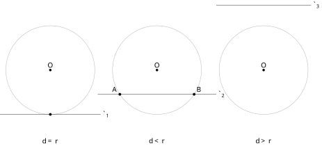
查看 TikZ 原始碼
\begin{document}
\begin{tikzpicture}[scale=1.5]
\draw[black!35] (-3.6,0) circle (1.5);
\draw[black!35] (0,0) circle (1.5);
\draw[black!35] (3.6,0) circle (1.5);
\draw (-5.3,-1.5) -- (-1.9,-1.5) node[right] {$\ell_1$};
\fill (-3.6,-1.5) circle (1.3pt);
\draw (-2,-0.82) -- (2,-0.82) node[right] {$\ell_2$};
\fill (-1.253,-0.82) circle (1.3pt) node[above left] {$A$};
\fill (1.253,-0.82) circle (1.3pt) node[above right] {$B$};
\draw (2,2.2) -- (5.2,2.2) node[right] {$\ell_3$};
\fill (-3.6,0) circle (1.2pt) node[above] {$O$};
\fill (0,0) circle (1.2pt) node[above] {$O$};
\fill (3.6,0) circle (1.2pt) node[above] {$O$};
\node at (-3.6,-2.4) {$d=r$};
\node at (0,-2.4) {$d<r$};
\node at (3.6,-2.4) {$d>r$};
\end{tikzpicture}
\end{document}与圆恰有一个公共点的直线称为圆的切线（Tangent），该公共点称为切点（Point of Contact）。与圆有两个公共点的直线称为圆的割线（Secant），如图 29-45 所示。
图 29-45：同一圆与三条直线的关系：
相切（ ，公共点恰一个）、 相交（ ，公共点 、 两个）、 相离（ ，无公共点）。
查看 TikZ 原始碼
\begin{document}
\begin{tikzpicture}[scale=1.5]
\draw (0,0) circle (1.8);
\coordinate (O) at (0,0);
\coordinate (P1) at (0.6,-0.3);
\coordinate (P2) at (110:1.8);
\coordinate (P3) at (2.6,0.9);
\draw[dashed] (O) -- (P1) (O) -- (P2) (O) -- (P3);
\fill (O) circle (1.2pt) node[above left] {$O$};
\fill (P1) circle (1.3pt) node[below right] {$P_1$};
\fill (P2) circle (1.3pt) node[above left] {$P_2$};
\fill (P3) circle (1.3pt) node[above right] {$P_3$};
\node at (0.5,-1.15) {$OP_1<r$};
\node at (-1.35,1.62) {$OP_2=r$};
\node at (2.35,-0.72) {$OP_3>r$};
\end{tikzpicture}
\end{document}设
图 29-46：
时 在圆内， 时 在圆上， 时 在圆外。
用集合语言写，
查看 TikZ 原始碼
\begin{document}
\begin{tikzpicture}[scale=1.5]
\draw (0,0) circle (1.2);
\draw (-1.8,-0.6) -- (1.8,-0.6);
\draw[dashed] (0,0) -- (0,-0.6);
\fill (0,0) circle (1.2pt) node[above] {$O$};
\fill (1.04,-0.6) circle (1.3pt);
\fill (-1.04,-0.6) circle (1.3pt);
\node[right] at (0,-0.3) {$d$};
\node[below] at (0,-1.9) {$d < r$};
\begin{scope}[xshift=4.6cm]
\draw (0,0) circle (1.2);
\draw (-1.8,-1.2) -- (1.8,-1.2);
\draw[dashed] (0,0) -- (0,-1.2);
\fill (0,0) circle (1.2pt) node[above] {$O$};
\fill (0,-1.2) circle (1.5pt) node[below right] {$P$};
\node[right] at (0,-0.6) {$d$};
\node[below] at (0,-1.9) {$d = r$};
\end{scope}
\begin{scope}[xshift=9.2cm]
\draw (0,0) circle (1.2);
\draw (-1.8,-1.9) -- (1.8,-1.9);
\draw[dashed] (0,0) -- (0,-1.9);
\fill (0,0) circle (1.2pt) node[above] {$O$};
\node[right] at (0,-0.95) {$d$};
\node[below] at (0,-2.2) {$d > r$};
\end{scope}
\end{tikzpicture}
\end{document}设直线
图 29-47：同一圆半径
固定，只把直线平移， 与 的大小关系就决定了公共点的个数：两个、恰一个（切点 ）、零个。
查看 TikZ 原始碼
\begin{document}
\begin{tikzpicture}[scale=1.5]
\coordinate (O) at (0,0);
\coordinate (H) at (0,-2.4);
\coordinate (P) at (1.3,-2.4);
\coordinate (R) at (45:1.8);
\draw (O) circle (1.8);
\draw[very thick] (-2.4,-2.4) -- (2.4,-2.4) node[right] {$\ell$};
\draw[dashed] (O) -- (H);
\draw[very thick] (O) -- (P);
\draw[dotted] (O) -- (R);
\draw (0.18,-2.4) -- (0.18,-2.22) -- (0,-2.22);
\node[left] at (0,-1.2) {$d$};
\node[above left] at (0.6,0.62) {$r$};
\node[right] at (0.85,-1.15) {$OP$};
\node[below] at (0.65,-2.4) {$HP$};
\fill (O) circle (1.2pt) node[above left] {$O$};
\fill (H) circle (1.2pt) node[below left] {$H$};
\fill (P) circle (1.3pt) node[below right] {$P$};
\end{tikzpicture}
\end{document}查看 TikZ 原始碼
\begin{document}
\begin{tikzpicture}[scale=1.5]
\coordinate (O) at (0,0);
\coordinate (H) at (0,-1);
\coordinate (P) at (-1.4967,-1);
\coordinate (Q) at (1.4967,-1);
\draw (O) circle (1.8);
\draw[very thick] (-2.4,-1) -- (2.4,-1) node[right] {$\ell$};
\draw[dashed] (O) -- (H) (O) -- (P) (O) -- (Q);
\node[below] at (-0.75,-1) {$h$};
\node[below] at (0.75,-1) {$h$};
\node[above right] at (0.8,-0.42) {$r$};
\fill (O) circle (1.2pt) node[above left] {$O$};
\fill (H) circle (1.2pt) node[below] {$H$};
\fill (P) circle (1.4pt) node[below left] {$P$};
\fill (Q) circle (1.4pt) node[below right] {$Q$};
\end{tikzpicture}
\end{document}查看 TikZ 原始碼
\begin{document}
\begin{tikzpicture}[scale=1.5]
\coordinate (O) at (0,0);
\coordinate (H) at (0,-1.8);
\draw (O) circle (1.8);
\draw[very thick] (-2.4,-1.8) -- (2.4,-1.8) node[right] {$\ell$};
\draw[dashed] (O) -- (H);
\draw (0.18,-1.8) -- (0.18,-1.62) -- (0,-1.62);
\node[right] at (0,-0.9) {$d = r$};
\fill (O) circle (1.2pt) node[above left] {$O$};
\fill (H) circle (1.5pt) node[below left] {$H$};
\end{tikzpicture}
\end{document}查看 TikZ 原始碼
\begin{document}
\begin{tikzpicture}[scale=1.5]
\coordinate (O) at (0,0);
\coordinate (R) at (45:1.8);
\coordinate (H) at (0,-2.4);
\coordinate (P) at (1.2,-2.4);
\draw (O) circle (1.8);
\draw[very thick] (-2.4,-2.4) -- (2.4,-2.4) node[right] {$\ell$};
\draw[dashed] (O) -- (H);
\draw[very thick] (O) -- (P);
\draw[dotted] (O) -- (R);
\draw (0.18,-2.4) -- (0.18,-2.22) -- (0,-2.22);
\node[above left] at (0.6,0.62) {$r$};
\node[left] at (-0.3,-1.2) {$d$};
\draw[<->] (-0.3,0) -- (-0.3,-2.4);
\fill (O) circle (1.2pt) node[above left] {$O$};
\fill (H) circle (1.2pt) node[below left] {$H$};
\fill (P) circle (1.3pt) node[below right] {$P$};
\end{tikzpicture}
\end{document}设
这一式子是三种情形共用的地基，如图 29-48 所示。
图 29-48：
是圆心 在 上的垂足， ； 是 上任取的一点。 直角三角形
即式 的依据： ，仅 时取等。 图中取
的位置作示意，点 处的虚线段为半径 。
下面按陈述的顺序 (a)、(b)、(c) 逐一证明，每一情形都含双向两个半句。
(a) 若
在
由 (1)，
故
反之，若
两点不同，故该值不为
两向合起来，(a) 成立，如图 29-49 所示。
图 29-49：
时，自垂足 向两侧各截取长 得点 、 。 两段虚线
、 同为圆的半径。
(b) 若
若
反之，若
若
图 29-50：
时垂足 本身就在圆上。 虚线段
同时是圆的半径与圆心到 的距离。
(c) 若
反之，若
图 29-51：
时整条 落在圆外。 虚线
被圆周截出的较短一段即半径 ，剩下的一段才是 超过 的部分。
三种情形合起来，
这条定理把「相交、相切、相离」三种位置完全翻译成一个不等式或等式，比较的双方是
与 。它与 §31.2.2 用判别式 数出公共点个数的结论是同一件事的几何版本与代数版本；而定义（点在圆内、圆上、圆外）里的 ，到了坐标里就成了把点的坐标代入方程左端看符号（§31.2.1）。
由 (b) 立即得到本章最重要的两条。
查看 TikZ 原始碼
\begin{document}
\begin{tikzpicture}[scale=1.5]
\coordinate (O) at (0,0);
\draw (O) circle (2);
\coordinate (P) at (90:2);
\coordinate (A) at (-2.4,2);
\coordinate (B) at (2.4,2);
\draw[very thick] (A) -- (B);
\draw[very thick] (O) -- (P);
\draw (0.28,2) -- (0.28,1.72) -- (0,1.72);
\fill (O) circle (1.2pt) node[below right] {$O$};
\fill (P) circle (1.4pt) node[above] {$P$};
\node[left] at (B) {$\ell$};
\node[right] at (0,1) {$r$};
\end{tikzpicture}
\end{document}圆的切线垂直于经过切点的半径：若
（如图 29-52 所示）
图 29-52：切线
切圆 于 ，半径 垂直于 （ 处为直角）。
查看 TikZ 原始碼
\begin{document}
\begin{tikzpicture}[scale=1.5]
\draw (0,0) circle (1.8);
\coordinate (O) at (0,0);
\coordinate (P) at (90:1.8);
\coordinate (Q) at (2.1,1.8);
\draw (-2.4,1.8) -- (2.4,1.8) node[right] {$\ell$};
\draw[very thick] (O) -- (P);
\draw[dashed] (O) -- (Q);
\draw (0.28,1.8) -- (0.28,1.52) -- (0,1.52);
\fill (O) circle (1.2pt) node[above right] {$O$};
\fill (P) circle (1.4pt) node[above left] {$P$};
\fill (Q) circle (1.3pt) node[above right] {$Q$};
\node at (0.55,1.17) {$OQ>OP$};
\end{tikzpicture}
\end{document}设
对
这说明
设
若
图 29-53：
上除切点 外另取一点 ， 在圆外，故 。
查看 TikZ 原始碼
\begin{document}
\begin{tikzpicture}[scale=1.5]
\coordinate (O) at (0,0);
\draw (O) circle (2);
\coordinate (P) at (55:2);
\coordinate (A) at (3.0804,0.2847);
\coordinate (B) at (-0.786,2.9919);
\draw[very thick] (A) -- (B);
\draw[very thick] (O) -- (P);
\draw (0.9751,1.3926) -- (1.2208,1.2205) -- (1.3929,1.4662);
\fill (O) circle (1.2pt) node[left] {$O$};
\fill (P) circle (1.4pt) node[left] {$P$};
\node[above right] at (B) {$\ell$};
\end{tikzpicture}
\end{document}经过半径的外端并且垂直于这条半径的直线是圆的切线：若
图 29-54：点
在圆 上，直线 经过 且 （ 处为直角），则 切圆于 。
查看 TikZ 原始碼
\begin{document}
\begin{tikzpicture}[scale=1.5]
\draw (0,0) circle (1.8);
\coordinate (O) at (0,0);
\coordinate (P) at (90:1.8);
\coordinate (Q) at (1.7,1.8);
\draw (-2.3,1.8) -- (2.3,1.8) node[right] {$\ell$};
\draw[very thick] (O) -- (P);
\draw[dashed] (O) -- (Q);
\draw (0.28,1.8) -- (0.28,1.52) -- (0,1.52);
\fill (O) circle (1.2pt) node[above right] {$O$};
\fill (P) circle (1.4pt) node[above left] {$P$};
\fill (Q) circle (1.3pt) node[above right] {$Q$};
\node at (2.15,1.15) {$OQ>OP$};
\end{tikzpicture}
\end{document}设
因
也可直接看出
故
由「直线与圆的位置关系」的 (b)，
图 29-55：
于圆上的点 ； 上另取的点 落在圆外， 是直角三角形 的斜边。
查看 TikZ 原始碼
\begin{document}
\begin{tikzpicture}[scale=1.5]
\coordinate (O) at (0,0);
\draw (O) circle (2);
\coordinate (P) at (90:2);
\coordinate (A) at (-2.4,2);
\coordinate (B) at (2.4,2);
\coordinate (C) at (0,3.3);
\coordinate (D) at (0,-0.6);
\draw[very thick] (A) -- (B);
\draw[dashed, very thick] (O) -- (P);
\draw[very thick] (C) -- (D);
\draw (0.28,2) -- (0.28,1.72) -- (0,1.72);
\fill (O) circle (1.2pt) node[left] {$O$};
\fill (P) circle (1.4pt) node[right] {$P$};
\node[right] at (2.4,2) {$\ell$};
\node[right] at (0.1,3.3) {$m$};
\end{tikzpicture}
\end{document}若直线
图 29-56：直线
经过切点 且垂直于切线 ，则 经过圆心 。
查看 TikZ 原始碼
\begin{document}
\begin{tikzpicture}[scale=1.5]
\draw (0,0) circle (1.8);
\coordinate (P) at (270:1.8);
\draw (-2.3,-1.8) -- (2.3,-1.8) node[right] {$\ell$};
\draw (0,-2.7) -- (0,2.7) node[right] {$m$};
\draw[very thick,dashed] (0,0) -- (P);
\draw (0.28,-1.8) -- (0.28,-1.52) -- (0,-1.52);
\fill (0,0) circle (1.4pt) node[above right] {$O$};
\fill (P) circle (1.4pt) node[below left] {$P$};
\end{tikzpicture}
\end{document}由切线性质定理，
在同一个平面内，过一点垂直于已知直线的直线只有一条（§8.6 定义点到直线的距离时所用的垂线即此唯一垂线），故
图 29-57：
，而题设 且 过 。 过一点垂直于已知直线的直线只有一条，故
与 所在直线重合（粗虚线）， 经过圆心 。
三条结论的用法各不相同：证垂直时想到「切线
半径」；证切线时想到「过半径外端作垂线」（或转而证 ）；要从「切线」反推圆心位置（例如求圆心、证三点共线）时，用第三条。
查看 TikZ 原始碼
\begin{document}
\begin{tikzpicture}[scale=1.5]
\draw (0,0) circle (1.5);
\coordinate (O) at (0,0);
\coordinate (A) at (122.3924:1.5);
\coordinate (B) at (237.6076:1.5);
\coordinate (P) at (-2.8,0);
\draw (P) -- (A) (P) -- (B);
\draw (O) -- (A) (O) -- (B);
\draw[dashed] (O) -- (P);
\fill (O) circle (1.2pt) node[above right] {$O$};
\node[above left] at (A) {$A$};
\node[below left] at (B) {$B$};
\node[left] at (P) {$P$};
\end{tikzpicture}
\end{document}从圆外一点
图 29-58：从外点
引的两条切线关于直线 左右对称， 、 、 。
(a)
连接
在直角三角形
由 RHS 得
对应边与对应角相等，即
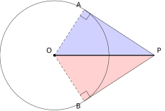
查看 TikZ 原始碼
\begin{document}
\begin{tikzpicture}[scale=1.5]
\coordinate (O) at (0,0);
\coordinate (P) at (3.3,0);
\coordinate (A) at (0.982,1.509);
\coordinate (B) at (0.982,-1.509);
\fill[blue, opacity=0.18] (O) -- (A) -- (P) -- cycle;
\fill[red, opacity=0.18] (O) -- (B) -- (P) -- cycle;
\draw (O) circle (1.8);
\draw (P) -- (A) (P) -- (B);
\draw[very thick] (O) -- (P);
\draw[dashed] (O) -- (A) (O) -- (B);
\draw (0.851,1.307) -- (1.052,1.177) -- (1.183,1.378);
\draw (0.851,-1.307) -- (1.052,-1.177) -- (1.183,-1.378);
\fill (O) circle (1.2pt) node[above left] {$O$};
\node[above right] at (P) {$P$};
\node[above left] at (A) {$A$};
\node[below left] at (B) {$B$};
\end{tikzpicture}
\end{document}图 29-59：蓝色
与红色 中， 、直角边 、斜边 （粗线）公共，由 RHS 全等，三条结论同时成立。
顺带一条常用结论：由
知 到 、 等距，由 知 亦然，两点都在线段 的垂直平分线上（§29.1.1 的引理），故 是弦 的垂直平分线， 且平分 。DSE 中「两切点连线」的题目多用这一条。
查看 TikZ 原始碼
\begin{document}
\begin{tikzpicture}[scale=1.5]
\draw (0,0) circle (1.3);
\draw (-0.65,-1.126) -- (-0.65,1.126);
\coordinate (A) at (120:1.3);
\coordinate (B) at (240:1.3);
\coordinate (P) at (-2.6,0);
\draw (P) -- (A) (P) -- (B);
\draw (0,0) -- (A) (0,0) -- (B);
\draw[dashed] (0,0) -- (P);
\fill (0,0) circle (1.2pt) node[above right] {$O$};
\node[above left] at (A) {$A$};
\node[below left] at (B) {$B$};
\node[left] at (P) {$P$};
\node[above right] at (-0.32,0.56) {$3$};
\node at (-0.36,0.2) {$60^\circ$};
\node at (-1.8273,0.2071) {$30^\circ$};
\node at (-1.8273,-0.2071) {$30^\circ$};
\draw (-0.575,0.9959) -- (-0.7049,0.9209) -- (-0.7799,1.0508);
\draw (-0.575,-0.9959) -- (-0.7049,-0.9209) -- (-0.7799,-1.0508);
\node[below] at (-1.3,-0.05) {$6$};
\end{tikzpicture}
\end{document}从圆外一点
图 29-60：直角在切点
、 ；
平分 与 ，故 、 ，而 、 。
(a)
(a)
(b)
若尚未熟用正切比，可改用特殊角的边角关系：
，故 ，再由毕氏定理 。
29.2.2 弦切角与内错弓形（The Angle in the Alternate Segment）
切线与弦在切点处夹出一个角，这个角与圆内的圆周角有直接的等量关系。本节内容属延伸内容，但在倒角题里它常常是唯一能「把圆外的角搬进圆内」的一条路。
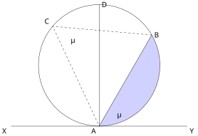
查看 TikZ 原始碼
\begin{document}
\begin{tikzpicture}[scale=1.5]
\fill[blue, opacity=0.18] (270:2) arc (270:390:2) -- (0,-2) -- cycle;
\draw (0,0) circle (2);
\draw (-2.9,-2) -- (2.9,-2);
\draw (0,-2) -- (30:2);
\draw[dashed] (30:2) -- (140:2) -- (0,-2);
\draw (0,-2) -- (0,2);
\node[below left] at (-2.9,-2) {$X$};
\node[below right] at (2.9,-2) {$Y$};
\node[right] at (30:2) {$B$};
\node[above left] at (140:2) {$C$};
\node[below left] at (0,-2) {$A$};
\node[right] at (0,2) {$D$};
\node at (-0.8768,0.8267) {$\theta$};
\node at (0.6495,-1.625) {$\theta$};
\end{tikzpicture}
\end{document}顶点在切点、一边沿切线、另一边为弦的角称为弦切角。设直线
弦
图 29-61：
为弦切角，它截取靠 的劣弧 （蓝色弓形即该弧与弦 围成）； 其内错弓形是含
的另一个弓形，两处的角同标为 。
为直径，供情形一的证明使用。
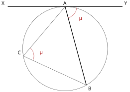
查看 TikZ 原始碼
\begin{document}
\begin{tikzpicture}[scale=1.5]
\coordinate (O) at (0,0);
\draw (O) circle (2);
\coordinate (A) at (90:2);
\coordinate (B) at (300:2);
\coordinate (C) at (190:2);
\coordinate (X) at (-2.7,2);
\coordinate (Y) at (2.7,2);
\draw[very thick] (X) -- (Y);
\draw[very thick] (A) -- (B);
\draw (C) -- (A) (C) -- (B);
\draw[red!65!black] (A) ++(-75:0.55) arc (-75:0:0.55);
\node[red!65!black] at (0.714,1.452) {$\theta$};
\draw[red!65!black] (C) ++(-25:0.5) arc (-25:50:0.5);
\node[red!65!black] at (-1.14,-0.163) {$\theta$};
\node[above] at (A) {$A$};
\node[below right] at (B) {$B$};
\node[above left] at (C) {$C$};
\node[above left] at (X) {$X$};
\node[above right] at (Y) {$Y$};
\end{tikzpicture}
\end{document}弦切角等于它所截取的弧所对的圆周角，即等于内错弓形内的圆周角： （如图 29-62 所示）
图 29-62：直线
切圆于 ，弦 与切线夹出弦切角 ； 落在弦 的另一侧弓形（内错弓形）内， 是该弓形内的圆周角，两者同为 。
查看 TikZ 原始碼
\begin{document}
\begin{tikzpicture}[scale=1.5]
\draw (0,0) circle (1.8);
\coordinate (A) at (270:1.8);
\coordinate (B) at (330:1.8);
\coordinate (D) at (90:1.8);
\draw (-2.6,-1.8) -- (2.6,-1.8) node[right] {$Y$};
\node[left] at (-2.6,-1.8) {$X$};
\draw (A) -- (D) (A) -- (B) (B) -- (D);
\draw (0.28,-1.8) -- (0.28,-1.52) -- (0,-1.52);
\draw (1.335,-1.03) -- (1.205,-0.805) -- (1.434,-0.675);
\node at (0.695,-1.614) {$\alpha$};
\node at (0.35,-1.195) {$\beta$};
\node at (0.3882,0.3511) {$\alpha$};
\fill (0,0) circle (1.2pt) node[right] {$O$};
\node[below left] at (A) {$A$};
\node[below right] at (B) {$B$};
\node[above] at (D) {$D$};
\end{tikzpicture}
\end{document}查看 TikZ 原始碼
\begin{document}
\begin{tikzpicture}[scale=1.5]
\draw (0,0) circle (1.8);
\coordinate (A) at (270:1.8);
\coordinate (B) at (330:1.8);
\coordinate (C) at (150:1.8);
\coordinate (D) at (90:1.8);
\draw (-2.6,-1.8) -- (2.6,-1.8) node[right] {$Y$};
\node[left] at (-2.6,-2.04) {$X$};
\draw (A) -- (B) (C) -- (A) (C) -- (B) (D) -- (A) (D) -- (B);
\node at (-1.064,0.405) {$\alpha$};
\node at (0.194,1.075) {$\alpha$};
\fill (0,0) circle (1.2pt) node[right] {$O$};
\node[below left] at (A) {$A$};
\node[below right] at (B) {$B$};
\node[above left] at (C) {$C$};
\node[above right] at (D) {$D$};
\end{tikzpicture}
\end{document}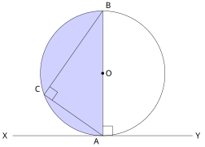
查看 TikZ 原始碼
\begin{document}
\begin{tikzpicture}[scale=1.5]
\draw (0,0) circle (1.8);
\coordinate (A) at (270:1.8);
\coordinate (B) at (90:1.8);
\coordinate (C) at (200:1.8);
\fill[blue, opacity=0.18] (0,0) -- (90:1.8) arc (90:270:1.8) -- cycle;
\draw (-2.6,-1.8) -- (2.6,-1.8) node[right] {$Y$};
\node[left] at (-2.6,-1.8) {$X$};
\draw (A) -- (B) (A) -- (C) (B) -- (C);
\draw (0.28,-1.8) -- (0.28,-1.52) -- (0,-1.52);
\draw (-1.4621,-0.7762) -- (-1.3015,-0.5469) -- (-1.5308,-0.3863);
\fill (0,0) circle (1.2pt) node[right] {$O$};
\node[below left] at (A) {$A$};
\node[above right] at (B) {$B$};
\node[above left] at (C) {$C$};
\end{tikzpicture}
\end{document}查看 TikZ 原始碼
\begin{document}
\begin{tikzpicture}[scale=1.5]
\draw (0,0) circle (1.8);
\coordinate (A) at (270:1.8);
\coordinate (B) at (200:1.8);
\coordinate (D) at (90:1.8);
\draw (-2.6,-1.8) node[left] {$X$} -- (2.6,-1.8) node[right] {$Y$};
\draw (A) -- (B) (A) -- (D) (B) -- (D);
\node at (-0.715,-1.568) {$\alpha$};
\node at (-0.227,1.085) {$\alpha$};
\fill (0,0) circle (1.2pt) node[right] {$O$};
\node[below right] at (A) {$A$};
\node[below left] at (B) {$B$};
\node[above] at (D) {$D$};
\end{tikzpicture}
\end{document}查看 TikZ 原始碼
\begin{document}
\begin{tikzpicture}[scale=1.5]
\draw (0,0) circle (1.8);
\coordinate (A) at (270:1.8);
\coordinate (B) at (200:1.8);
\coordinate (C) at (235:1.8);
\coordinate (D) at (90:1.8);
\draw (-2.6,-1.8) node[left] {$X$} -- (2.6,-1.8) node[right] {$Y$};
\draw (A) -- (C) -- (B) -- (D) -- cycle;
\node at (-0.632,-0.903) {$\beta$};
\node at (-0.227,1.085) {$\alpha$};
\fill (0,0) circle (1.2pt) node[right] {$O$};
\node[below right] at (A) {$A$};
\node[above left] at (B) {$B$};
\node[below left] at (C) {$C$};
\node[above right] at (D) {$D$};
\end{tikzpicture}
\end{document}按
情形一：所截的弧为劣弧（
此时射线
图 29-63A：作直径
、连 ，则 、 。
与 同为 的余角。
又
在
故
图 29-63B：
与 同在弦 的上侧弓形内，张向同一段弧 ，故 。
情形二：
此时
图 29-64：
为直径时 （切线垂直于直径），而 是半圆（蓝色部分）内的圆周角，也是 。
情形三：所截的弧为优弧（
取
图 29-65A：
为钝角时改看另一侧的弦切角 ，它截取含 的劣弧 ；
在另一段弧上，情形一给出 。
图 29-65B：
与 分居弦 两侧， 为圆内接四边形， 与 互补，故 。
三种情形合并，定理成立。
同理
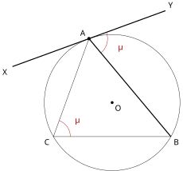
查看 TikZ 原始碼
\begin{document}
\begin{tikzpicture}[scale=1.5]
\coordinate (O) at (0,0);
\draw (O) circle (2);
\coordinate (A) at (110:2);
\coordinate (B) at (330:2);
\coordinate (C) at (210:2);
\coordinate (X) at (-2.939,1.058);
\coordinate (Y) at (1.571,2.7);
\draw[very thick] (X) -- (Y);
\draw[very thick] (A) -- (B);
\draw (C) -- (A) (C) -- (B);
\draw[red!65!black] (A) ++(-50:0.55) arc (-50:20:0.55);
\node[red!65!black] at (0.234,1.633) {$\theta$};
\draw[red!65!black] (C) ++(0:0.5) arc (0:70:0.5);
\node[red!65!black] at (-1.036,-0.512) {$\theta$};
\fill (O) circle (1.2pt) node[below right] {$O$};
\fill (A) circle (1.4pt);
\node[above left] at (A) {$A$};
\node[below right] at (B) {$B$};
\node[below left] at (C) {$C$};
\node[below left] at (X) {$X$};
\node[above right] at (Y) {$Y$};
\end{tikzpicture}
\end{document}设直线
图 29-66：已知条件只是
（两处同标 ）； 与圆相切于 是本定理要证的结论，故图中不预画半径与直角。
查看 TikZ 原始碼
\begin{document}
\begin{tikzpicture}[scale=1.5]
\draw (0,0) circle (1.8);
\coordinate (A) at (215:1.8);
\coordinate (B) at (350:1.8);
\coordinate (C) at (120:1.8);
\coordinate (Y) at (-0.098,-2.998);
\coordinate (X) at (-2.852,0.934);
\draw (X) -- (Y) node[below right] {$Y(T)$};
\node[above left] at (X) {$X$};
\draw (A) -- (B) (C) -- (A) (C) -- (B);
\draw[dashed] (0,0) -- (A);
\node at (-0.724,-1.317) {$\alpha$};
\node at (-0.266,0.854) {$\alpha$};
\fill (0,0) circle (1.2pt) node[above right] {$O$};
\node[above left] at (A) {$A$};
\node[below right] at (B) {$B$};
\node[above] at (C) {$C$};
\end{tikzpicture}
\end{document}过
图 29-67：过
作真切线 （与 同侧），弦切角定理给出 ； 题设
也等于 ，同侧定角射线唯一，故两射线重合， 就是切线。
射线
（两者都等于题设的那个圆周角）。
又在直线
弦切角是倒角题里最容易被「视而不见」的一条，因为它藏得不像定理。辨认只看三件事：
- 顶点在圆周上；
- 一条边落在切线上（题目常把切线画成过该点的线段或其延长线，不一定标出「切线」二字）；
- 另一条边是弦。
三条齐备，就写「弦切角等于内错弓形内的圆周角」。若图中只给了「一条过圆上一点的直线与弦所成的角等于该弦所对的圆周角」，反过来用逆定理，即得这条直线是切线。
查看 TikZ 原始碼
\begin{document}
\begin{tikzpicture}[scale=1.5]
\draw (0,0) circle (2);
\draw (-2.7,-2) -- (2.7,-2);
\draw (0,-2) -- (2:2) (0,-2) -- (206:2);
\draw (2:2) -- (206:2);
\node[below left] at (-2.7,-2) {$X$};
\node[below right] at (2.7,-2) {$Y$};
\node[below left] at (0,-2) {$A$};
\node[right] at (2:2) {$B$};
\node[left] at (206:2) {$C$};
\node at (0.649,-1.734) {$46^\circ$};
\node at (-0.674,-1.809) {$32^\circ$};
\end{tikzpicture}
\end{document}直线
图 29-68：两个弦切角
、 分别把 与 从圆外搬到圆内。
(a)
(a)
(b) 同理，
(c)
检验：
的三个内角之和 （§8.2 内角和定理），与 (a)、(b)、(c) 一致。
查看 TikZ 原始碼
\begin{document}
\begin{tikzpicture}[scale=1.5]
\draw (0,0) circle (2);
\coordinate (A) at (60:2);
\coordinate (B) at (280:2);
\coordinate (C) at (200:2);
\coordinate (D) at (250:2);
\draw (A) -- (B) -- (C) -- cycle;
\draw (A) -- (D);
\draw (B) -- (D);
\draw (-0.7,2.7127) -- (2.7,0.7513);
\node[above] at (-0.56,2.63) {$\ell$};
\fill (2.56,0.8319) circle (1.2pt) node[below right] {$T$};
\fill (0,0) circle (1.2pt) node[above right] {$O$};
\fill (A) circle (1.2pt) node[above] {$A$};
\fill (B) circle (1.2pt) node[below right] {$B$};
\fill (C) circle (1.2pt) node[above left] {$C$};
\fill (D) circle (1.2pt) node[below] {$D$};
\fill (-0.499,-1.482) circle (1.5pt) node[above right] {$X$};
\end{tikzpicture}
\end{document}圆
图 29-69：
切圆于 且 ， 为 上与 分居 两侧的一点；
为弦 与 的交点。 (a) 用弦切角与内错角，(b) 用等弦对等弧与 AA 相似。
(a)
(a) 在切线
又
两式合并得
(b) 因
两对角相等，由 AA 得
去分母即得
(b) 的形状是「一条线段之积等于另一线段的平方」，正是下一小节圆幂定理的形状：
是过 的弦被交点分成的两段之积， 则扮演切线段的角色。
29.2.3 圆幂定理（Power of a Point）
两条弦（或割线）相交，交点把每条弦分成两段。下面两条定理说明：无论怎样转动这两条线，两段乘积都不变。这两条超出常规课程的要求，此处作为扩展阅读给出，证明只用本章的圆周角与 §8.4 的相似三角形；结论是解析几何中「点与圆的幂」这一概念的几何原型。
查看 TikZ 原始碼
\begin{document}
\begin{tikzpicture}[scale=1.5]
\draw (0,0) circle (1.6);
\draw (-1.386,0.8) -- (0.415,-1.546);
\draw (-1.504,-0.547) -- (0.676,1.45);
\fill (0,0) circle (1.2pt) node[right] {$O$};
\fill (-0.83,0.07) circle (1.5pt) node[above] {$P$};
\node[above left] at (-1.386,0.8) {$A$};
\node[below right] at (0.415,-1.546) {$B$};
\node[below left] at (-1.504,-0.547) {$C$};
\node[above right] at (0.676,1.45) {$D$};
\node[below] at (0,-2.1) {$(a)$};
\begin{scope}[xshift=5.6cm]
\draw (0,0) circle (1.6);
\coordinate (P) at (-3.1,-0.9);
\draw (P) -- (1.323,-0.9);
\draw (P) -- (1.166,1.092);
\draw[dashed] (0,0) -- (P);
\fill (0,0) circle (1.2pt) node[right] {$O$};
\fill (P) circle (1.2pt) node[left] {$P$};
\node[below] at (-1.323,-0.9) {$A$};
\node[right] at (1.323,-0.9) {$B$};
\node[above left] at (-1.588,-0.194) {$C$};
\node[above right] at (1.166,1.092) {$D$};
\node[below] at (0,-2.1) {$(b)$};
\end{scope}
\end{tikzpicture}
\end{document}圆内两条弦
图 29-70：(a) 两弦交于圆内一点
； (b) 两割线（其一可为切线）交于圆外一点
。 两种情形下「过
的弦被分成的两段之积」都是同一个数。
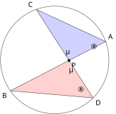
查看 TikZ 原始碼
\begin{document}
\begin{tikzpicture}[scale=1.5]
\coordinate (O) at (0,0);
\coordinate (A) at (20:1.8);
\coordinate (B) at (215:1.8);
\coordinate (C) at (110:1.8);
\coordinate (D) at (315:1.8);
\coordinate (P) at (0.474,-0.018);
\fill[blue, opacity=0.18] (A) -- (P) -- (C) -- cycle;
\fill[red, opacity=0.18] (D) -- (P) -- (B) -- cycle;
\draw (O) circle (1.8);
\draw (A) -- (B) (C) -- (D) (A) -- (C) (B) -- (D);
\node at (0.42,0.28) {$\theta$};
\node at (0.53,-0.33) {$\theta$};
\node at (1.28,0.42) {$\alpha$};
\node at (0.8453,-1.0134) {$\alpha$};
\fill (P) circle (1.3pt) node[below right] {$P$};
\node[above right] at (A) {$A$};
\node[below left] at (B) {$B$};
\node[above left] at (C) {$C$};
\node[below right] at (D) {$D$};
\end{tikzpicture}
\end{document}连接
在
由 AA 得
图 29-71：连
、 。 蓝色
与红色 中， 是一对对顶角， 是同弓形内张向 的两个圆周角，由 AA 相似。
去分母即得
查看 TikZ 原始碼
\begin{document}
\begin{tikzpicture}[scale=1.5]
\coordinate (O) at (0,0);
\draw (O) circle (2);
\coordinate (P) at (3,0);
\coordinate (A) at (1.9884,0.215);
\coordinate (B) at (-1.729,1.0052);
\coordinate (C) at (1.8956,-0.6376);
\coordinate (D) at (-0.3956,-1.9605);
\draw[very thick] (P) -- (B);
\draw[very thick] (P) -- (D);
\fill (P) circle (1.4pt) node[right] {$P$};
\node[above] at (A) {$A$};
\node[above left] at (B) {$B$};
\node[above right] at (C) {$C$};
\node[below left] at (D) {$D$};
\end{tikzpicture}
\end{document}查看 TikZ 原始碼
\begin{document}
\begin{tikzpicture}[scale=1.5]
\coordinate (O) at (0,0);
\draw (O) circle (2);
\coordinate (P) at (3,0);
\coordinate (A) at (1.9884,0.215);
\coordinate (B) at (-1.729,1.0052);
\coordinate (T) at (1.3333,-1.4907);
\draw[very thick] (P) -- (B);
\draw[very thick] (P) -- (T);
\fill (P) circle (1.4pt) node[right] {$P$};
\fill (T) circle (1.4pt);
\node[above] at (A) {$A$};
\node[above left] at (B) {$B$};
\node[below right] at (T) {$T$};
\end{tikzpicture}
\end{document}从圆外一点
图 29-72A：从圆外一点
引的两条割线 、 ， 、 分别是各线上较近的交点。
特别地，若
图 29-72B：把其中一条割线转到与圆相切，切点为
，同一乘积即成 。
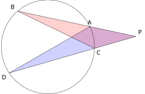
查看 TikZ 原始碼
\begin{document}
\begin{tikzpicture}[scale=1.5]
\coordinate (P) at (3.4,0.4);
\coordinate (A) at (1.623,0.778);
\coordinate (B) at (-1.167,1.371);
\coordinate (C) at (1.799,-0.059);
\coordinate (D) at (-1.494,-1.003);
\fill[blue, opacity=0.18] (P) -- (A) -- (D) -- cycle;
\fill[red, opacity=0.18] (P) -- (C) -- (B) -- cycle;
\draw (0,0) circle (1.8);
\draw (P) -- (B) (P) -- (D) (A) -- (D) (C) -- (B);
\node[above right] at (P) {$P$};
\node[above] at (A) {$A$};
\node[above left] at (B) {$B$};
\node[below right] at (C) {$C$};
\node[below left] at (D) {$D$};
\end{tikzpicture}
\end{document}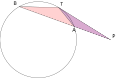
查看 TikZ 原始碼
\begin{document}
\begin{tikzpicture}[scale=1.5]
\coordinate (P) at (3.4,0);
\coordinate (T) at (0.9533,1.5269);
\coordinate (A) at (1.691,0.623);
\coordinate (B) at (-0.893,1.563);
\fill[blue, opacity=0.18] (P) -- (T) -- (A) -- cycle;
\fill[red, opacity=0.18] (P) -- (B) -- (T) -- cycle;
\draw (0,0) circle (1.8);
\draw (P) -- (T) (P) -- (B) (T) -- (A) (T) -- (B);
\node[above right] at (P) {$P$};
\node[above right] at (T) {$T$};
\node[below] at (A) {$A$};
\node[above left] at (B) {$B$};
\end{tikzpicture}
\end{document}两割线。 连接
在
由 AA 得
图 29-73：连
、 。 蓝色
与红色 共用 处的角 ；
（张向同一段弧 ），其补角 ，由 AA 相似。
切线情形。 连接
在
由 AA 得
图 29-74：连
、 。 蓝色
与红色 共用角 ；
是弦切角，截取 ，等于同弧所对的圆周角 ，故两三角形相似。
查看 TikZ 原始碼
\begin{document}
\begin{tikzpicture}[scale=1.5]
\coordinate (O) at (0,0);
\draw (O) circle (2);
\coordinate (P) at (0.6,0);
\coordinate (A) at (-1.6908,-1.0682);
\coordinate (B) at (1.9051,0.6086);
\draw[very thick] (A) -- (B);
\draw[dashed] (O) -- (P);
\fill (O) circle (1.2pt) node[above left] {$O$};
\fill (P) circle (1.4pt) node[below] {$P$};
\node[below left] at (A) {$A$};
\node[above right] at (B) {$B$};
\node[above] at (0.32,0) {$h$};
\end{tikzpicture}
\end{document}查看 TikZ 原始碼
\begin{document}
\begin{tikzpicture}[scale=1.5]
\coordinate (O) at (0,0);
\draw (O) circle (2);
\coordinate (P) at (3.4,0);
\coordinate (A) at (1.9265,0.5363);
\coordinate (B) at (-1.1312,1.6491);
\draw[very thick] (P) -- (B);
\draw[dashed] (O) -- (P);
\fill (O) circle (1.2pt) node[below right] {$O$};
\fill (P) circle (1.4pt) node[below] {$P$};
\node[below] at (A) {$A$};
\node[above left] at (B) {$B$};
\node[above] at (1.7,0) {$h$};
\end{tikzpicture}
\end{document}设
（如图 29-75A、图 29-75B 所示）
即该乘积与割线的方向无关。
图 29-75A：
在 内（ ），过 的一条一般割线交圆于 、 ，虚线 。 此时
。
图 29-75B：
在 外（ ），过 的一条一般割线交圆于 、 （ 较近），虚线 。 此时
，恰等于切线长的平方。
查看 TikZ 原始碼
\begin{document}
\begin{tikzpicture}[scale=1.5]
\coordinate (O) at (0,0);
\draw (O) circle (2);
\coordinate (P) at (0.6,0);
\coordinate (A) at (-1.6908,-1.0682);
\coordinate (B) at (1.9051,0.6086);
\coordinate (M) at (0.1072,-0.2298);
\draw[very thick] (A) -- (B);
\draw[dashed] (O) -- (M) (O) -- (P) (O) -- (A);
\draw (0.0226,-0.0485) -- (0.2039,0.036) -- (0.2885,-0.1453);
\fill (O) circle (1.2pt) node[above left] {$O$};
\fill (P) circle (1.4pt) node[below] {$P$};
\fill (M) circle (1.2pt) node[below right] {$M$};
\node[below left] at (A) {$A$};
\node[above right] at (B) {$B$};
\node[above] at (0.3,0) {$h$};
\end{tikzpicture}
\end{document}查看 TikZ 原始碼
\begin{document}
\begin{tikzpicture}[scale=1.5]
\coordinate (O) at (0,0);
\draw (O) circle (2);
\coordinate (P) at (3.4,0);
\coordinate (A) at (1.9265,0.5363);
\coordinate (B) at (-1.1312,1.6491);
\coordinate (M) at (0.3977,1.0927);
\draw[very thick] (P) -- (B);
\draw[dashed] (O) -- (M) (O) -- (P) (O) -- (A);
\draw (0.3293,0.9048) -- (0.5173,0.8364) -- (0.5856,1.0243);
\fill (O) circle (1.2pt) node[below left] {$O$};
\fill (P) circle (1.4pt) node[right] {$P$};
\fill (M) circle (1.2pt) node[above] {$M$};
\node[below] at (A) {$A$};
\node[above left] at (B) {$B$};
\node[above] at (1.7,0) {$h$};
\end{tikzpicture}
\end{document}设
由「圆心至弦的垂线平分该弦」（§29.1.1），
两式相减，公共的
图 29-76A：
在圆内（ ）的证明图。
是弦 的中点， （ 处为直角）；虚线 、 ，两个直角三角形 与 共用直角边 。
图 29-76B：
在圆外（ ）的证明图。 构型与图 29-76A 全同，只是
移到形外： 、 同在 一侧， 、 。
两个表达式都只含
点
名称中的「幂」取「平方」之义：圆外情形下该幂恰为切线长的二次幂。
在坐标系里，
圆内一点
(a) 由相交弦定理，
解得
故
本例说明圆幂定理的两种典型用途：圆内给出「一段求另一段」，圆外把切线长与割线段互相换算。
29.3 三角形的四心（Four Centres of a Triangle）
本节难度上限：T B ｜ C C- ｜ E C+ ｜ Q C+
29.3.1 三角形的特殊线段与两条等距性质（Special Segments and Two Equidistance Properties）
重心、外心、内心、垂心并称三角形的「四心」。四心的定义都建立在四条特殊线段上：中线、高、角平分线、边的垂直平分线。四心的差别只在用的是哪一条线，而每条线各配一条等距性质；性质记牢，四心的结论便不必死背。四心与角锥顶点在底面上投影的对应关系见 §32.3.2（立体几何 (II)）。
查看 TikZ 原始碼
\begin{document}
\begin{tikzpicture}[scale=1.5]
\draw (0,2.2) -- (-2.6,0) -- (1.8,0) -- cycle;
\draw[very thick] (0,2.2) -- (0,0);
\draw (0.2,0) -- (0.2,0.2) -- (0,0.2);
\fill (0,2.2) circle (1.2pt) node[above] {$A$};
\fill (-2.6,0) circle (1.2pt) node[below left] {$B$};
\fill (1.8,0) circle (1.2pt) node[below right] {$C$};
\fill (0,0) circle (1.2pt) node[below] {$H$};
\node[below] at (-0.4,-0.75) {$(a)$};
\begin{scope}[xshift=5.3cm]
\draw (0,2.2) -- (-2.6,0) -- (1.8,0) -- cycle;
\draw[very thick] (0,2.2) -- (-0.4,0);
\draw (-1.55,-0.09) -- (-1.47,0.09);
\draw (0.65,-0.09) -- (0.73,0.09);
\fill (0,2.2) circle (1.2pt) node[above] {$A$};
\fill (-2.6,0) circle (1.2pt) node[below left] {$B$};
\fill (1.8,0) circle (1.2pt) node[below right] {$C$};
\fill (-0.4,0) circle (1.2pt) node[below] {$M$};
\node[below] at (0.1,-0.75) {$(b)$};
\end{scope}
\begin{scope}[xshift=10.6cm]
\draw (0,2.2) -- (-2.6,0) -- (1.8,0) -- cycle;
\draw[very thick] (0,2.2) -- (-0.2,0);
\draw (-0.344,1.909) arc (220.2:264.65:0.45);
\draw (-0.042,1.752) arc (264.65:309.1:0.45);
\draw (-0.1761,1.8632) -- (-0.2409,1.7392);
\draw (0.1105,1.8364) -- (0.1512,1.7025);
\fill (0,2.2) circle (1.2pt) node[above] {$A$};
\fill (-2.6,0) circle (1.2pt) node[below left] {$B$};
\fill (1.8,0) circle (1.2pt) node[below right] {$C$};
\fill (-0.2,0) circle (1.2pt) node[below] {$P$};
\node[below] at (-0.2,-0.75) {$(c)$};
\end{scope}
\end{tikzpicture}
\end{document}设
- 中线（Median）：连接一个顶点与对边中点的线段。
- 高（Altitude）：从一个顶点向对边所在的直线作垂线，顶点与垂足之间的线段称为该边上的高；垂足到顶点的距离即 §8.6 意义下点到直线的距离。
- 角平分线（Angle Bisector）：一个内角的平分线与该角对边相交，顶点与交点之间的线段称为该角的角平分线。
- 边的垂直平分线（Perpendicular Bisector of a Side）：过某边中点且垂直于该边的直线。
图 29-77：自同一顶点
引出的三条线段。 (a) 高
， 为垂足； (b) 中线
， 为 的中点（ 、 各有一划）； (c) 角平分线
， （两弧各有一划）。 三点
、 、 一般互不相同。
查看 TikZ 原始碼
\begin{document}
\begin{tikzpicture}[scale=1.5]
\draw (0,0) -- (4,0) -- (-1.2,1.2) -- cycle;
\draw[dotted] (4,0) -- (-1.2,0);
\draw[dotted] (-1.2,1.2) -- (2,-2);
\draw[dashed] (-1.2,1.2) -- (-1.2,0);
\draw[dashed] (4,0) -- (2,-2);
\draw[dashed] (0,0) -- (0.202,0.876);
\fill (0,0) circle (1.2pt) node[above left] {$A$};
\fill (4,0) circle (1.2pt) node[below right] {$B$};
\fill (-1.2,1.2) circle (1.2pt) node[above left] {$C$};
\fill (-1.2,0) circle (1.2pt) node[below left] {$H_1$};
\fill (2,-2) circle (1.2pt) node[below right] {$H_2$};
\fill (0.202,0.876) circle (1.2pt) node[above right] {$H_3$};
\end{tikzpicture}
\end{document}钝角三角形中，夹钝角的两边上的高，其垂足落在对边的延长线上，因而高在三角形之外；钝角顶点上的高仍在内部。作图时须先把两条边延长，再从对面的顶点作垂线（如图 29-78 所示）。直角三角形的三条高有两条与直角边重合，垂足就是直角顶点。 「三线共点」因此不能只画锐角三角形就下结论：钝角三角形的三条高所在直线仍然共点，只是交点跑到了三角形外面（见 §29.3.3）。
图 29-78：
为钝角。 三条高
、 、 中， 、 落在边的延长线上（点线为延长线）。 只有
在三角形内部。
两条等距性质是四心一切论证的支点。第一条关于角平分线，第二条已在 §29.1.1 建立。
查看 TikZ 原始碼
\begin{document}
\begin{tikzpicture}[scale=2]
\coordinate (O) at (0,0);
\coordinate (X) at (0:3);
\coordinate (Y) at (80:3);
\coordinate (Q) at (1.3023,0);
\coordinate (R) at (0.2261,1.2825);
\coordinate (P) at (40:1.7);
\draw (O) -- (X);
\draw (O) -- (Y);
\draw (O) -- (P);
\draw (P) -- (Q);
\draw (P) -- (R);
\draw (O) ++(40:0.5) arc (40:0:0.5);
\draw (O) ++(40:0.5) arc (40:80:0.5);
\node at (20:0.78) {$\theta$};
\node at (60:0.78) {$\theta$};
\draw (1.3023,0.16) -- (1.1423,0.16) -- (1.1423,0);
\draw (0.3837,1.2547) -- (0.3559,1.0971) -- (0.1984,1.1249);
\fill (O) circle (1.2pt) node[below left] {$O$};
\fill (P) circle (1.4pt) node[above right] {$P$};
\fill (Q) circle (1.2pt) node[below right] {$Q$};
\fill (R) circle (1.2pt) node[above left] {$R$};
\node[below left] at (X) {$X$};
\node[above left] at (Y) {$Y$};
\end{tikzpicture}
\end{document}若一点在角的平分线上，则该点到角的两边等距，如图 29-79 所示；反之，角的内部到两边等距的点在该角的平分线上。
图 29-79：点
在 的平分线上， 、 ，则 。
查看 TikZ 原始碼
\begin{document}
\begin{tikzpicture}[scale=1.5]
\draw[->] (0,0) -- (4.6,0) node[below right] {$X$};
\draw[->] (0,0) -- (3.87,3.32) node[above right] {$Y$};
\draw (0,0) -- (3.65,1.35);
\draw[dashed] (3.19,1.18) -- (3.19,0) (3.19,1.18) -- (2.42,2.08);
\draw (3.0,0) -- (3.0,0.19) -- (3.19,0.19);
\fill (0,0) circle (1.2pt) node[below left] {$O$};
\fill (3.19,1.18) circle (1.2pt) node[right] {$P$};
\fill (3.19,0) circle (1.2pt) node[below] {$Q$};
\fill (2.42,2.08) circle (1.2pt) node[above left] {$R$};
\node at (1.15,0.13) {$\alpha$};
\node at (0.98,0.62) {$\alpha$};
\end{tikzpicture}
\end{document}查看 TikZ 原始碼
\begin{document}
\begin{tikzpicture}[scale=1.5]
\coordinate (O) at (0,0);
\coordinate (X) at (3.4,0);
\coordinate (Y) at (1.905,2.819);
\coordinate (P) at (2.207,1.174);
\coordinate (Q) at (2.207,0);
\coordinate (R) at (1.234,1.829);
\draw (O) -- (X) node[below right] {$X$};
\draw (O) -- (Y) node[above right] {$Y$};
\draw[very thick] (O) -- (P);
\draw[dashed] (P) -- (Q) (P) -- (R);
\draw (2.207,0.24) -- (1.967,0.24) -- (1.967,0);
\draw (1.4166,1.706) -- (1.2936,1.5239) -- (1.111,1.6468);
\draw (2.087,0.587) -- (2.327,0.587);
\draw (1.654,1.402) -- (1.788,1.601);
\fill (O) circle (1.2pt) node[below left] {$O$};
\fill (P) circle (1.3pt) node[above right] {$P$};
\fill (Q) circle (1.2pt) node[below right] {$Q$};
\fill (R) circle (1.2pt) node[above left] {$R$};
\end{tikzpicture}
\end{document}设
自
图 29-80A：
在 的平分线上， 、 为两条垂线段。
（AAS），故 。
在
两角及一角的对边对应相等，由 AAS 得
反之，设
在直角三角形
图 29-80B：
在角的内部且 （单撇），斜边 公共，由 RHS 得 ，故 平分 。
两条等距性质成对使用：角平分线管「到边等距」，垂直平分线管「到端点等距」（§29.1.1）。下面两个心，正是把这两条各用三次。
29.3.2 内心与外心（Incentre and Circumcentre）
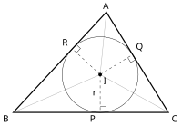
查看 TikZ 原始碼
\begin{document}
\begin{tikzpicture}[scale=1.5]
\coordinate (A) at (0.60,2.60);
\coordinate (B) at (-1.80,0);
\coordinate (C) at (2.20,0);
\coordinate (I) at (0.44,0.98);
\coordinate (P) at (0.44,0);
\coordinate (Q) at (1.28,1.50);
\coordinate (R) at (-0.28,1.65);
\draw[very thick] (A) -- (B) -- (C) -- cycle;
\draw[gray!70] (I) -- (A) (I) -- (B) (I) -- (C);
\draw[dashed] (I) -- (P) (I) -- (Q) (I) -- (R);
\draw (I) circle (0.982);
\draw (0.44,0.15) -- (0.59,0.15) -- (0.59,0);
\draw (-0.1702,1.5478) -- (-0.0683,1.6579) -- (-0.1781,1.76);
\draw (1.1525,1.421) -- (1.2309,1.2932) -- (1.3584,1.3721);
\fill (I) circle (1.3pt) node[below right] {$I$};
\node[above] at (A) {$A$};
\node[below left] at (B) {$B$};
\node[below right] at (C) {$C$};
\node[below left] at (P) {$P$};
\node[above right] at (Q) {$Q$};
\node[above left] at (R) {$R$};
\node[left] at (0.44,0.49) {$r$};
\end{tikzpicture}
\end{document}三角形的三条角平分线交于一点，该点到三边等距，如图 29-81 所示。
图 29-81：三条角平分线交于一点
；
到三边的垂线段 ，即以 为圆心、 为半径的圆与三边都相切。
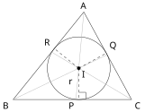
查看 TikZ 原始碼
\begin{document}
\begin{tikzpicture}[scale=1.5]
\draw (0.168,0.823) circle (0.823);
\draw (0.3,2.3) -- (-1.55,0) -- (1.55,0) -- cycle;
\draw[gray!60] (0.3,2.3) -- (0.094,0) (-1.55,0) -- (0.91,1.178) (1.55,0) -- (-0.546,1.248);
\draw[dashed] (0.168,0.823) -- (0.168,0) (0.168,0.823) -- (0.888,1.219) (0.168,0.823) -- (-0.473,1.339);
\draw (0.35,0.02) -- (0.35,0.19) -- (0.17,0.19);
\fill (0.168,0.823) circle (1.3pt) node[below right] {$I$};
\node[above] at (0.3,2.3) {$A$};
\node[below left] at (-1.55,0) {$B$};
\node[below right] at (1.55,0) {$C$};
\node[below left] at (0.168,0) {$P$};
\node[above right] at (0.888,1.219) {$Q$};
\node[above left] at (-0.473,1.339) {$R$};
\node[left] at (0.1,0.45) {$r$};
\end{tikzpicture}
\end{document}设
这样的交点存在：由内角和定理（§8.2），
图 29-82：三条角平分线共点于
；
，以内切圆（实线圆）与三边相切。 灰色线为三条角平分线，虚线为三条垂线段。
自
即
以
查看 TikZ 原始碼
\begin{document}
\begin{tikzpicture}[scale=1.5]
\coordinate (A) at (-0.4,2.3);
\coordinate (B) at (-2.2,-1.1);
\coordinate (C) at (2.4,-1.1);
\coordinate (I) at (-0.179,0.117);
\coordinate (X) at (-0.179,-1.1);
\coordinate (Y) at (0.761,0.891);
\coordinate (Z) at (-1.254,0.686);
\draw (I) circle (1.217);
\draw (A) -- (B) -- (C) -- cycle;
\draw[dashed] (A) -- (I) (B) -- (I) (C) -- (I);
\draw[dashed] (I) -- (X) (I) -- (Y) (I) -- (Z);
\draw (-0.179,-0.86) -- (0.061,-0.86) -- (0.061,-1.1);
\fill (I) circle (1.4pt) node[above right] {$I$};
\node[above] at (A) {$A$};
\node[below left] at (B) {$B$};
\node[below right] at (C) {$C$};
\end{tikzpicture}
\end{document}由上面的定理，三角形的三条角平分线交于一点，且该点到三边等距。这个交点称为内心（Incentre），记作
图 29-83：三条角平分线交于
；
到三边的垂线段（虚线）都是内切圆的半径 ，圆与三边各切于一点。
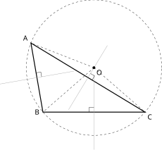
查看 TikZ 原始碼
\begin{document}
\begin{tikzpicture}[scale=1.5]
\coordinate (A) at (-1.6,2.3);
\coordinate (B) at (-1.2,0);
\coordinate (C) at (2.2,0);
\coordinate (O) at (0.5,1.4804);
\coordinate (M) at (-1.4,1.15);
\coordinate (N) at (0.3,1.15);
\coordinate (K) at (0.5,0);
\draw[very thick] (A) -- (B) -- (C) -- cycle;
\draw[gray!70] (-2.6315,0.9358) -- (-0.1685,1.3642);
\draw[gray!70] (-0.3473,0.0806) -- (0.9473,2.2194);
\draw[gray!70] (0.5,-1.25) -- (0.5,1.25);
\draw[dashed] (O) -- (A) (O) -- (B) (O) -- (C);
\draw[dashed] (O) circle (2.2543);
\draw (-1.2424,1.1774) -- (-1.2698,1.335) -- (-1.4274,1.3076);
\draw (0.3828,1.2869) -- (0.5197,1.204) -- (0.4369,1.0672);
\draw (0.5,0.16) -- (0.34,0.16) -- (0.34,0);
\fill (O) circle (1.3pt) node[below right] {$O$};
\node[above left] at (A) {$A$};
\node[left] at (B) {$B$};
\node[below right] at (C) {$C$};
\end{tikzpicture}
\end{document}三角形三边的垂直平分线交于一点，该点到三个顶点等距，如图 29-84 所示；这一点正是外接圆的圆心。
图 29-84：三边的垂直平分线交于一点
；
到三顶点等距，虚线圆是以 为圆心、 为半径的外接圆。
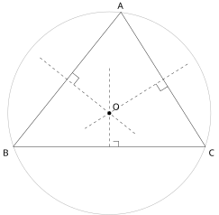
查看 TikZ 原始碼
\begin{document}
\begin{tikzpicture}[scale=1.5]
\coordinate (A) at (0.2,2.5);
\coordinate (B) at (-2.6,-1);
\coordinate (C) at (2.4,-1);
\coordinate (O) at (-0.1,-0.13);
\coordinate (M) at (-0.1,-1);
\draw[black!35] (O) circle (2.639);
\draw (A) -- (B) -- (C) -- cycle;
\draw[dashed] (M) -- (-0.1,1.05);
\draw[dashed] (-1.904,1.313) -- (0.603,-0.693);
\draw[dashed] (1.936,1.149) -- (-0.736,-0.529);
\draw (0.14,-1) -- (0.14,-0.86) -- (0,-0.86);
\draw (-1.062,0.922) -- (-0.89,0.785) -- (-1.028,0.612);
\draw (1.417,0.564) -- (1.23,0.447) -- (1.113,0.633);
\fill (O) circle (1.4pt) node[above right] {$O$};
\node[above] at (A) {$A$};
\node[below left] at (B) {$B$};
\node[below right] at (C) {$C$};
\end{tikzpicture}
\end{document}设
即
以
图 29-85：三条虚线是三边的垂直平分线（直角记号画在各边中点处），两两之交同为
；
，故虚线圆过三个顶点。
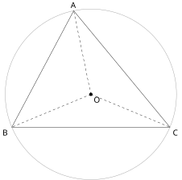
查看 TikZ 原始碼
\begin{document}
\begin{tikzpicture}[scale=1.5]
\coordinate (A) at (-0.4,2.3);
\coordinate (B) at (-2.2,-1.1);
\coordinate (C) at (2.4,-1.1);
\coordinate (O) at (0.1,-0.141);
\draw[black!40] (O) circle (2.492);
\draw (A) -- (B) -- (C) -- cycle;
\draw[dashed] (O) -- (A) (O) -- (B) (O) -- (C);
\fill (O) circle (1.4pt) node[below right] {$O$};
\node[above] at (A) {$A$};
\node[below left] at (B) {$B$};
\node[below right] at (C) {$C$};
\end{tikzpicture}
\end{document}由上面的定理，三角形三条边的垂直平分线交于一点，且该点到三顶点等距。这个交点称为外心（Circumcentre），记作
图 29-86：外接圆的圆心即外心
，三条虚线半径 都等于 。
本定理与 §29.1.1「过三点的圆」是同一件事的两面：那里由三点造圆，这里由三边找圆心。两者互相呼应，也说明「外接圆存在而且唯一」。
查看 TikZ 原始碼
\begin{document}
\begin{tikzpicture}[scale=1.5]
\begin{scope}[shift={(0,0)}]
\draw (0,0) circle (1.3);
\draw (1.3,0) -- (-0.4446,1.2216) -- (-0.8356,-0.9959) -- cycle;
\draw[dashed] (0,0) -- (1.3,0) (0,0) -- (-0.4446,1.2216) (0,0) -- (-0.8356,-0.9959);
%
\fill (0,0) circle (1.2pt) node[below right] {$O$};
\node[right] at (1.30,0) {$A$};
\node[above left] at (-0.445,1.221) {$B$};
\node[below left] at (-0.836,-0.996) {$C$};
\node[below] at (0,-1.9) {$(a)$};
\end{scope}
\begin{scope}[shift={(3.9,-0.45)}]
\draw (0,0) circle (1.3);
\draw (-1.30,0) -- (1.30,0) -- (0.66,1.12) -- cycle;
\draw[dashed] (0,0) -- (-1.30,0) (0,0) -- (1.30,0) (0,0) -- (0.66,1.12);
\draw[black] (0.4864,1.0208) -- (0.5856,0.8471) -- (0.7592,0.9464);
\fill (0,0) circle (1.2pt) node[below right] {$O$};
\node[below left] at (-1.30,0) {$A$};
\node[below right] at (1.30,0) {$B$};
\node[above] at (0.66,1.12) {$C$};
\node[below] at (0,-1.9) {$(b)$};
\end{scope}
\begin{scope}[shift={(7.8,-0.25)}]
\draw (0,0) circle (1.3);
\draw (1.30,0) -- (0.65,1.13) -- (-1.13,0.65) -- cycle;
\draw[dashed] (0,0) -- (1.30,0) (0,0) -- (0.65,1.13) (0,0) -- (-1.13,0.65);
%
\fill (0,0) circle (1.2pt) node[below right] {$O$};
\node[right] at (1.30,0) {$A$};
\node[left] at (0.65,1.13) {$B$};
\node[above] at (-1.13,0.65) {$C$};
\node[below] at (0,-1.9) {$(c)$};
\end{scope}
\end{tikzpicture}
\end{document}锐角三角形的外心在三角形内部；直角三角形的外心在斜边的中点；钝角三角形的外心在三角形外部。三种情形如图 29-87 所示。
图 29-87：外心的三种位置：(a) 锐角三角形在内部；
(b) 直角三角形在斜边中点；
(c) 钝角三角形在外部。
外心位置的判别只要求会判断，下面的论证属扩展阅读。要点是把「外心与某顶点是否在对应边的同侧」翻译成「该角是否为锐角」。
查看 TikZ 原始碼
\begin{document}
\begin{tikzpicture}[scale=1.5]
\draw (0,0) circle (1.6);
\draw (60:1.6) -- (175:1.6) -- (285:1.6) -- cycle;
\fill (0,0) circle (1.4pt) node[right] {$O$};
\node[above right] at (60:1.6) {$A$};
\node[above left] at (175:1.6) {$B$};
\node[below right] at (285:1.6) {$C$};
\node[below] at (0,-2.05) {$(a)$};
\begin{scope}[xshift=4.4cm]
\draw (0,0) circle (1.6);
\draw (60:1.6) -- (240:1.6) -- (330:1.6) -- cycle;
\fill (0,0) circle (1.4pt) node[above left] {$O$};
\node[above right] at (60:1.6) {$A$};
\node[below left] at (240:1.6) {$B$};
\node[below right] at (330:1.6) {$C$};
\node[below] at (0,-2.05) {$(b)$};
\end{scope}
\begin{scope}[xshift=8.8cm]
\draw (0,0) circle (1.6);
\draw (0:1.6) -- (25:1.6) -- (140:1.6) -- cycle;
\fill (0,0) circle (1.4pt) node[below right] {$O$};
\node[right] at (0:1.6) {$A$};
\node[above right] at (25:1.6) {$B$};
\node[above left] at (140:1.6) {$C$};
\node[below] at (0,-2.05) {$(c)$};
\end{scope}
\end{tikzpicture}
\end{document}先看一条边
弦
顶点
由圆心角定理，
图 29-88：外心的三种位置。
(a) 锐角三角形，
在内部； (b) 直角三角形（
）， 为斜边 的中点； (c) 钝角三角形（钝角在
）， 在外部。
点
由上式，这三个条件就是
若
若
查看 TikZ 原始碼
\begin{document}
\begin{tikzpicture}[scale=1.5]
\coordinate (A) at (-2,0);
\coordinate (B) at (0.5,0);
\coordinate (C) at (-2,2.5);
\coordinate (O) at (-0.75,1.25);
\draw (O) circle (1.7678);
\draw[very thick] (A) -- (B) -- (C) -- cycle;
\draw[dashed] (O) -- (A) (O) -- (C);
\draw (A) -- ++(0.25,0) -- ++(0,0.25) -- ++(-0.25,0);
\fill (O) circle (1.2pt) node[above left] {$O$};
\node[below left] at (A) {$A$};
\node[right] at (B) {$B$};
\node[left] at (C) {$C$};
\end{tikzpicture}
\end{document}直角三角形的外接圆半径等于斜边的一半，如图 29-89 所示。
图 29-89：直角三角形中
是外接圆的直径，外心 为斜边 的中点，故 。
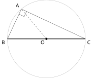
查看 TikZ 原始碼
\begin{document}
\begin{tikzpicture}[scale=1.5]
\draw[black!35] (0,0) circle (1.8);
\coordinate (O) at (0,0);
\coordinate (B) at (-1.8,0);
\coordinate (C) at (1.8,0);
\coordinate (A) at (130:1.8);
\draw[very thick] (B) -- (C);
\draw (A) -- (B) (A) -- (C);
\draw (-1.267,1.143) -- (-1.031,1.033) -- (-0.921,1.269);
\draw[dashed] (O) -- (A);
\fill (O) circle (1.4pt) node[below left] {$O$};
\node[above left] at (A) {$A$};
\node[below left] at (B) {$B$};
\node[below right] at (C) {$C$};
\end{tikzpicture}
\end{document}设
由上定理，外心为
图 29-90：
时 就是外接圆的直径，外心 即 的中点，故 。
设
再取
三条链起来，即得实用的判别法：
第一条就是 §8.5 毕氏定理的逆定理，这里把钝、锐两种情形一并补齐。
内切圆给出一条把面积、周长与半径连起来的实用公式。
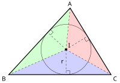
查看 TikZ 原始碼
\begin{document}
\begin{tikzpicture}[scale=1.5]
\coordinate (A) at (0.60,2.60);
\coordinate (B) at (-1.80,0);
\coordinate (C) at (2.20,0);
\coordinate (I) at (0.44,0.98);
\coordinate (P) at (0.44,0);
\coordinate (Q) at (1.28,1.50);
\coordinate (R) at (-0.28,1.65);
\fill[blue, opacity=0.18] (I) -- (B) -- (C) -- cycle;
\fill[red, opacity=0.18] (I) -- (C) -- (A) -- cycle;
\fill[green, opacity=0.18] (I) -- (A) -- (B) -- cycle;
\draw[very thick] (A) -- (B) -- (C) -- cycle;
\draw[dashed] (I) -- (A) (I) -- (B) (I) -- (C);
\draw (I) circle (0.982);
\draw[dashed] (I) -- (P) (I) -- (Q) (I) -- (R);
\draw (0.44,0.15) -- (0.59,0.15) -- (0.59,0);
\draw (-0.1702,1.5478) -- (-0.0683,1.6579) -- (-0.1781,1.76);
\draw (1.1525,1.421) -- (1.2309,1.2932) -- (1.3584,1.3721);
\fill (I) circle (1.3pt) node[above right] {$I$};
\node[above] at (A) {$A$};
\node[below left] at (B) {$B$};
\node[below right] at (C) {$C$};
\node[left] at (0.44,0.49) {$r$};
\end{tikzpicture}
\end{document}设三角形的面积为
图 29-91：内切圆切三边，圆心为
、半径为 ； 连接
与三顶点， 分成三个高为 的小三角形。
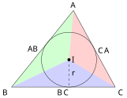
查看 TikZ 原始碼
\begin{document}
\begin{tikzpicture}[scale=1.5]
\fill[blue, opacity=0.18] (0.168,0.823) -- (-1.55,0) -- (1.55,0) -- cycle;
\fill[red, opacity=0.18] (0.168,0.823) -- (1.55,0) -- (0.3,2.3) -- cycle;
\fill[green, opacity=0.18] (0.168,0.823) -- (0.3,2.3) -- (-1.55,0) -- cycle;
\draw (0.3,2.3) -- (-1.55,0) -- (1.55,0) -- cycle;
\draw[dashed] (0.168,0.823) -- (0.168,0);
\draw (0.168,0.823) circle (0.823);
\fill (0.168,0.823) circle (1.3pt) node[right] {$I$};
\node[above] at (0.3,2.3) {$A$};
\node[below left] at (-1.55,0) {$B$};
\node[below right] at (1.55,0) {$C$};
\node[below] at (0,0) {$BC$};
\node[right] at (0.95,1.1) {$CA$};
\node[left] at (-0.62,1.15) {$AB$};
\node[right] at (0.168,0.4) {$r$};
\end{tikzpicture}
\end{document}内心
图 29-92：
被分成三块（蓝、红、绿），三块的高都是内切圆半径 ，底依次为 、 、 。
外接圆半径
也能由三边求出（三边之积除以四倍面积），但其推导要用到后续章节的正弦定理，本章不预支；求 目前最可靠的路线仍是「找斜边」或「找垂直平分线的交点」。
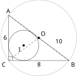
查看 TikZ 原始碼
\begin{document}
\begin{tikzpicture}[scale=1.5]
\coordinate (C) at (0,0);
\coordinate (B) at (2.4,0);
\coordinate (A) at (0,1.8);
\coordinate (I) at (0.6,0.6);
\coordinate (O) at (1.2,0.9);
\draw[black!40] (O) circle (1.5);
\draw (I) circle (0.6);
\draw (A) -- (B) -- (C) -- cycle;
\draw[dashed] (O) -- (A) (O) -- (B) (O) -- (C);
\draw (0.16,0) -- (0.16,0.16) -- (0,0.16);
\node[left] at (0,0.9) {$6$};
\node[below] at (1.2,0) {$8$};
\node[above right] at (1.78,0.6) {$10$};
\fill (I) circle (1.3pt) node[below left] {$I$};
\fill (O) circle (1.3pt) node[above right] {$O$};
\node[above] at (A) {$A$};
\node[below right] at (B) {$B$};
\node[below left] at (C) {$C$};
\end{tikzpicture}
\end{document}直角三角形的两条直角边为
图 29-93：同一直角三角形上的内切圆（圆心
、半径 ）与外接圆（圆心 在斜边中点、半径 ）。 三边标号
、 、 以厘米为单位。
斜边
外接圆半径。 直角三角形的外心在斜边中点，故
直角三角形的内切圆半径另有一条快捷公式：两直角边为
、 、斜边为 时 。本例给出 ，与上面一致。此式由 与 化简可得，宜用于验算。
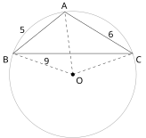
查看 TikZ 原始碼
\begin{document}
\begin{tikzpicture}[scale=1.5]
\coordinate (A) at (-0.214,1.1);
\coordinate (B) at (-1.575,0);
\coordinate (C) at (1.575,0);
\coordinate (O) at (0,-0.556);
\draw[black!40] (O) circle (1.67);
\draw (A) -- (B) -- (C) -- cycle;
\draw[dashed] (O) -- (A) (O) -- (B) (O) -- (C);
\node[above] at (A) {$A$};
\node[below left] at (B) {$B$};
\node[below right] at (C) {$C$};
\fill (O) circle (1.4pt) node[below right] {$O$};
\node[left] at (-1.2,0.62) {$5$};
\node[right] at (0.85,0.5) {$6$};
\node[below] at (-0.7,-0.05) {$9$};
\end{tikzpicture}
\end{document}三角形的三边长依次为
图 29-94：最长边
所对的 为钝角，外心 落在三角形之外（在 的另一侧）。 三边标号以厘米为单位。
最长边为
因
同一数据的对照：若第三边改为
，则 ，外心在该边中点；若第三边为 ，则 ，三角皆锐，外心在内部。
29.3.3 重心与垂心（Centroid and Orthocentre）
初中阶段只要求「认识」三条中线共点、三条高共点，不要求证明（初中学习重点 24.3）。本节在已建立的圆理论与相似工具之上，把这两件事证出来；证明本身属扩展阅读，结论则必须记牢。
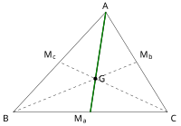
查看 TikZ 原始碼
\begin{document}
\begin{tikzpicture}[scale=1.5]
\coordinate (A) at (0.60,2.60);
\coordinate (B) at (-1.80,0);
\coordinate (C) at (2.20,0);
\coordinate (Ma) at (0.20,0);
\coordinate (Mb) at (1.40,1.30);
\coordinate (Mc) at (-0.60,1.30);
\coordinate (G) at (0.33,0.87);
\draw (A) -- (B) -- (C) -- cycle;
\draw[very thick] (A) -- (Ma);
\draw[dashed] (B) -- (Mb) (C) -- (Mc);
\draw[green!55!black, very thick] (A) -- (G);
\draw[green!55!black, very thick] (G) -- (Ma);
\fill (G) circle (1.4pt) node[right] {$G$};
\node[above] at (A) {$A$};
\node[below left] at (B) {$B$};
\node[below right] at (C) {$C$};
\node[below left] at (Ma) {$M_a$};
\node[above right] at (Mb) {$M_b$};
\node[above left] at (Mc) {$M_c$};
\end{tikzpicture}
\end{document}三角形的三条中线交于一点，该点把每条中线分成
（如图 29-95 所示）
其中
图 29-95：三条中线
、 、 交于一点 ，且 。
查看 TikZ 原始碼
\begin{document}
\begin{tikzpicture}[scale=1.5]
\coordinate (A) at (0.5,3.4);
\coordinate (B) at (-3.4,-1);
\coordinate (C) at (3.6,-1.4);
\coordinate (Ma) at (0.1,-1.2);
\coordinate (Mb) at (2.05,1);
\coordinate (Mc) at (-1.45,1.2);
\coordinate (G) at (0.233,0.333);
\draw (A) -- (B) -- (C) -- cycle;
\draw (A) -- (Ma);
\draw (B) -- (Mb);
\draw (C) -- (Mc);
\draw[dashed] (Ma) -- (Mb);
\fill (A) circle (1.2pt) node[above] {$A$};
\fill (B) circle (1.2pt) node[below left] {$B$};
\fill (C) circle (1.2pt) node[below right] {$C$};
\fill (G) circle (1.5pt) node[above right] {$G$};
\node[below] at (Ma) {$M_a$};
\node[right] at (Mb) {$M_b$};
\node[above left] at (Mc) {$M_c$};
\end{tikzpicture}
\end{document}先取两条中线
图 29-96：三条中线共点于
； 虚线
为 的中位线， ，相似比 。
连接
在
因
对应边成比例，得
即
剩下说明第三条中线
设
把上面已证的结论用于中线对
三条中线共点于
由上面的定理，三角形的三条中线交于一点。这个交点称为重心（Centroid），记作
重心是均匀薄板的质心：把三角形纸板顶在指尖上，恰好平衡之点就是重心。物理上的「重心」与几何上的「形心」重合，这一事实要等到力学中用杠杆原理才证得，此处只作名称由来的说明。
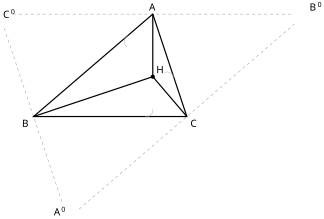
查看 TikZ 原始碼
\begin{document}
\begin{tikzpicture}[scale=1.5]
\coordinate (A) at (1.10,2.40);
\coordinate (B) at (-1.70,0);
\coordinate (C) at (1.90,0);
\coordinate (H) at (1.1,0.9333);
\coordinate (H1) at (1.10,0);
\coordinate (H2) at (1.54,1.08);
\coordinate (H3) at (0.38,1.78);
\coordinate (Ap) at (-0.90,-2.40);
\coordinate (Bp) at (4.70,2.40);
\coordinate (Cp) at (-2.50,2.40);
\draw[gray, dashed] (-0.63,-2.17) -- (4.43,2.17);
\draw[gray, dashed] (4.35,2.40) -- (-2.15,2.40);
\draw[gray, dashed] (-2.39,2.07) -- (-1.01,-2.07);
\draw[very thick] (A) -- (B) -- (C) -- cycle;
\draw[very thick] (A) -- (H);
\draw[very thick] (B) -- (H);
\draw[very thick] (C) -- (H);
\draw[gray!70] (1.10,0.18) -- (1.10,0.09) -- (1.01,0) -- (0.92,0);
\draw[gray!70] (1.37,1.02) -- (1.45,1.05) -- (1.57,0.99) -- (1.60,0.91);
\draw[gray!70] (0.49,1.64) -- (0.43,1.71) -- (0.44,1.84) -- (0.51,1.90);
\fill (H) circle (1.4pt) node[above right] {$H$};
\node[above] at (A) {$A$};
\node[below left] at (B) {$B$};
\node[below right] at (C) {$C$};
\node[above left] at (Ap) {$A'$};
\node[above right] at (Bp) {$B'$};
\node[right] at (Cp) {$C'$};
\end{tikzpicture}
\end{document}任意三角形的三条高所在直线交于一点，如图 29-97 所示；该交点落在锐角三角形内部、直角三角形的直角顶点上、钝角三角形外部。
图 29-97：三条高
、 、 交于一点 ； 以原三角形为 medial triangle 的
（灰色虚线）中，三条高恰为其三边的垂直平分线。
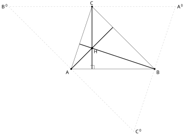
查看 TikZ 原始碼
\begin{document}
\begin{tikzpicture}[scale=1.5]
\draw[gray!60,dashed] (5,3) -- (-3,3) -- (3,-3) -- cycle;
\draw (0,0) -- (4,0) -- (1,3) -- cycle;
\draw[very thick] (0,0) -- (2,2);
\draw[very thick] (4,0) -- (0.4,1.2);
\draw[very thick] (1,3) -- (1,0);
\fill (0,0) circle (1.2pt) node[below left] {$A$};
\fill (4,0) circle (1.2pt) node[below right] {$B$};
\fill (1,3) circle (1.2pt) node[above] {$C$};
\fill (1,1) circle (1.5pt) node[below right] {$H$};
\node[right] at (5,3) {$A'$};
\node[left] at (-3,3) {$B'$};
\node[right] at (3,-3) {$C'$};
\draw (1.1,0) -- (1.1,0.18) -- (0.92,0.18);
\end{tikzpicture}
\end{document}共点性。 过
三条直线两两相交，记
得
图 29-98：过三顶点作对边的平行线得
（灰虚线）， 、 、 为其三边中点。
的三条高（粗线）恰为 的三条垂直平分线，故共点于 ，即 的外心。
先说明
看点
点
再看高与垂直平分线的关系。
由「三边垂直平分线共点」定理，
位置。 直角三角形中，夹直角的两条边本身就是两条高（直角边互相垂直），它们交于直角顶点，第三条高也过该点，故垂心为直角顶点。
钝角三角形的两条高落在形外（§29.3.1 注记、图 29-78），其交点亦在形外。
锐角三角形的三条高都在形内，交点亦在形内。
由上面的定理，三角形三条高所在的直线交于一点。这个交点称为垂心（Orthocentre），记作
查看 TikZ 原始碼
\begin{document}
\begin{tikzpicture}[scale=1.5]
\coordinate (A) at (0,2.4);
\coordinate (B) at (-1.2,0);
\coordinate (C) at (1.2,0);
\coordinate (D) at (0,0);
\coordinate (G) at (0,0.8);
\draw (A) -- (B) -- (C) -- cycle;
\draw[very thick] (A) -- (D);
\draw[dashed] (B) -- (0.6,1.2) (C) -- (-0.6,1.2);
\draw (0.14,0) -- (0.14,0.14) -- (0,0.14);
\draw (-0.6,0.12) -- (-0.6,-0.12) (0.6,0.12) -- (0.6,-0.12);
\node[above] at (A) {$A$};
\node[below left] at (B) {$B$};
\node[below right] at (C) {$C$};
\node[below right] at (D) {$D$};
\fill (G) circle (1.5pt) node[right] {$G$};
\node[left] at (0,1.6) {$2$};
\node[left] at (0,0.4) {$1$};
\end{tikzpicture}
\end{document}图 29-99：
既是中线也是高（ ， 以单撇标出）； 三条中线（粗线
与两条虚线）交于重心 ， 与 之比为 。
(a)
(a) 因
(b) 以
(c)
又
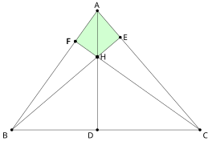
查看 TikZ 原始碼
\begin{document}
\begin{tikzpicture}[scale=1.5]
\fill[green, opacity=0.18] (0,3.5) -- (-0.642,2.601) -- (0,2.143) -- (0.671,2.718) -- cycle;
\draw (0,3.5) -- (-2.5,0) -- (3,0) -- cycle;
\draw (0,3.5) -- (0,0);
\draw (-2.5,0) -- (0.671,2.718);
\draw (3,0) -- (-0.642,2.601);
\fill (0,3.5) circle (1.2pt) node[above] {$A$};
\fill (-2.5,0) circle (1.2pt) node[below left] {$B$};
\fill (3,0) circle (1.2pt) node[below right] {$C$};
\fill (0,2.143) circle (1.5pt) node[right] {$H$};
\fill (0,0) circle (1.2pt) node[below left] {$D$};
\fill (0.671,2.718) circle (1.2pt) node[right] {$E$};
\fill (-0.642,2.601) circle (1.2pt) node[left] {$F$};
\fill (-0.642,2.601) circle (1.2pt) node[left] {$F$};
\end{tikzpicture}
\end{document}在四边形
图 29-100：三条高共点于
。 绿色四边形
的两个直角给出 ，而 与 为对顶角。
因三角形为锐角三角形，垂心
代入
另一条路：四边形
中 ，即一对对角互补，由对角互补判别法知 、 、 、 四点共圆；于是 也可直接由内接四边形读出。「高线加四点共圆」是 DSE 演绎题里常见的搭配。
29.3.4 四心的比较（Comparison of the Four Centres）
四心的构造线不同，等距的对象也就不同。下表把全节的结论并置，供解题时快速检索；同一三角形中四心的位置对比如图 29-101 所示。
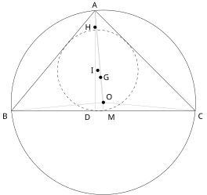
查看 TikZ 原始碼
\begin{document}
\begin{tikzpicture}[scale=1.5]
\draw (0.25,0.25) circle (2.761);
\draw[gray!50] (0.25,0.25) -- (0,3) (0.25,0.25) -- (-2.5,0) (0.25,0.25) -- (3,0);
\draw[dashed] (0.081,1.209) circle (1.209);
\draw (0,3) -- (-2.5,0) -- (3,0) -- cycle;
\draw[gray!50] (0,3) -- (0.25,0);
\draw[gray!50] (0,3) -- (0,0);
\fill (0.25,0.25) circle (1.4pt) node[above right] {$O$};
\fill (0.081,1.209) circle (1.4pt) node[left] {$I$};
\fill (0.167,1) circle (1.4pt) node[right] {$G$};
\fill (0,2.5) circle (1.4pt) node[left] {$H$};
\node[above] at (0,3) {$A$};
\node[below left] at (-2.5,0) {$B$};
\node[below right] at (3,0) {$C$};
\node[below left] at (-0.03,-0.03) {$D$};
\node[below right] at (0.3,-0.03) {$M$};
\end{tikzpicture}
\end{document}图 29-101：同一锐角三角形中的四个心。
外接圆过三顶点（圆心
），内切圆切三边（圆心 ）， 在中线 上且 ， 在高 上。 四心一般不重合，只有等边三角形时四心合一。
| 重心 |
外心 |
内心 |
垂心 |
|
|---|---|---|---|---|
| 构造线 | 三条中线 | 三边垂直平分线 | 三内角平分线 | 三条高 |
| 等距对象 | 无（截距成比例） | 三顶点： |
三边： |
无（提供垂直关系） |
| 关联圆 | 无 | 外接圆 | 内切圆 | 无 |
| 关键数量 | 斜边中点（直角时） | 垂心角 |
||
| 位置 | 恒在内部 | 锐角内、直角边上、钝角外 | 恒在内部 | 锐角内、直角顶点、钝角外 |
两个心的名字只差一个字，等距对象正好相反：外心配外接圆，圆过顶点，故到顶点等距；内心配内切圆，圆切边，故到边等距。判断该用哪一个时，看题目的圆与三角形是「过点」还是「切线」：过点用外心（垂直平分线），切线用内心（角平分线）。 另需注意：外心可以跑到三角形外面，内心与重心永远在内部。
(a)
在
(b)
两问的公式性质不同：(b) 的
只在 为锐角（即 与 在 同侧）时成立， 为钝角时应取 ；(a) 的 对任意三角形都成立，因为内心恒在内部。
等边三角形的三线重合，四心合一，这一点在 §8.7 的「三线合一」处已露端倪。反过来，若一个三角形的内心与外心重合，则该三角形必为等边三角形。
29.4 小结（Summary）
五条主线：
- 弦、弧与弦心距（§29.1.1）：三者由圆心角串在一起。等弦
- 圆上的角（§29.1.2）：圆心角定理
- 内接四边形与四点共圆（§29.1.3）：性质与判别是一互一逆的两组。性质是「共圆
- 切线（§29.2.1、§29.2.2）：切线垂直于过切点的半径另有直接证法（切点即最近点），而「
- 四心（§29.3）：构造线决定一切。两条等距性质（角平分线到边等距、垂直平分线到端点等距）各用三次，就得到内心与外心；重心靠中点定理与相似；垂心靠「过顶点作对边平行线」把高转成外接圆的垂直平分线。四心的位置差异（可在形内、形外、形上）都源于此。
易错点：
- 把「弧与圆心角成正比」搬到弦上：圆心角加倍，弦不加倍（§29.1.1 警告框）。
- 顶点落在劣弧上时，所对的是优弧，圆心角要取反角；此时圆周角大于
- 同弓形的圆周角相等，弦两侧的圆周角互补，两者别混。
- 弦切角要配对正确的内错弓形：角内部含哪段弧，就用另一段弧上的圆周角。
- 用切线判定时，「经过半径的外端」与「垂直于这条半径」两个条件缺一不可。
- 相交弦、切割线里的线段是从交点量到两个交点的两段，不是整条割线；圆外一点引切线时
- 外心到顶点等距、内心到边等距，二者相反；外心与垂心都可能跑到三角形外部。
- 判别法与性质定理的方向用反：写证明时先确认「已经共圆」还是「正要证共圆」。
- 两平行弦的距离题，同侧与异侧两解都要写。
方法总表
| 目标 | 已知条件 | 方法 | 主要依据 |
|---|---|---|---|
| 证两弦（两弧）相等 | 圆心角相等，或弦心距相等 | 全等三角形或毕氏定理 | §29.1.1 |
| 求弦心距、弦长 | 半径与弦（或弦心距） | 垂线平分弦，构成直角三角形 | §29.1.1 |
| 求圆周角 | 同弧的圆心角 | 圆心角定理 |
§29.1.2 |
| 求同弧上另一顶点的角 | 顶点在同侧或异侧 | 同弓形角相等；两侧互补 | §29.1.2、§29.1.3 |
| 证直径或直角 | 圆周角 |
半圆推论与其逆 | §29.1.2 |
| 证四点共圆 | 同侧等角／对角互补／外角等于内对角 | 同一法（作过三点的圆） | §29.1.3 |
| 证两线垂直 | 切线与过切点的半径 | 切线性质定理 | §29.2.1 |
| 证切线 | 过圆上一点的直线 | 证该直线垂直于过该点的半径，或证 |
§29.2.1、§29.2.2 |
| 求切线长 | 外点与圆心距、半径 | 两切线全等（RHS）加毕氏定理 | §29.2.1 |
| 求两弦相交的分段 | 一条弦的两段与另一弦全长 | 相交弦定理（AA 相似） | §29.2.3 |
| 求圆外割线段 | 切线长与割线一段 | 切割线定理 |
§29.2.3 |
| 找三角形的外心、内心 | 三边或三角 | 分别作垂直平分线、角平分线 | §29.3.2 |
| 求内切圆半径 | 面积 |
§29.3.2 | |
| 求外接圆半径（直角三角形） | 斜边 |
§29.3.2 | |
| 求重心分中线的比 | 中线长 | §29.3.3 | |
| 用垂直关系解题 | 三条高、垂心 | 垂心与共高线形成的直角、四边形内角和 | §29.3.3 |
回顾全章：圆的全部性质都只靠两件事推出来，一是把圆上的图形还原成等腰三角形（半径相等），二是圆心角与圆周角的两倍关系。有了这两件工具，等腰三角形、全等判定与相似（平面几何(I) 的老朋友）便足以撑起所有证明。下一章把视野从「已知图形找性质」转向「按条件找点」，即 §30 的轨迹：本章反复出现的「到圆心距离等于半径」正是轨迹语言的第一句话。
中英对照词汇表（Glossary）
| 中文术语 | 英文 | 符号或简写 | 备注 |
|---|---|---|---|
| 圆 | Circle | 到定点距离等于定长的点的集合 | |
| 圆心 | Centre | ||
| 半径 | Radius | ||
| 直径 | Diameter | ||
| 圆周 | Circumference | 周长 |
|
| 等圆 | Equal Circles | 半径相等的两圆 | |
| 弦 | Chord | 两端在圆周上的线段 | |
| 弧 | Arc | ||
| 劣弧 | Minor Arc | 不超过半圆的弧 | |
| 优弧 | Major Arc | 超过半圆的弧 | |
| 弓形 | Segment | 弦与所对弧围成 | |
| 扇形 | Sector | 两半径与所截弧围成 | |
| 弦心距 | Distance from Centre to Chord | 圆心到弦的垂线段长 | |
| 等弦截取等弧 | Equal Chords Cut Off Equal Arcs | ||
| 垂直平分线 | Perpendicular Bisector | 到线段两端点等距的点的集合 | |
| 过三点的圆 | Circle through Three Points | 三点不共线时存在而且唯一 | |
| 圆心角 | Angle at the Centre | ||
| 圆周角 | Angle at the Circumference | ||
| 反角 | Reflex Angle | ||
| 圆心角定理 | Angle at the Centre Theorem | ||
| 同弓形内的圆周角 | Angles in the Same Segment | 顶点须在同侧 | |
| 半圆内的圆周角 | Angle in a Semicircle | ||
| 圆内接四边形 | Cyclic Quadrilateral | 四顶点共圆 | |
| 外接圆 | Circumscribed Circle / Circumcircle | 半径记作 |
|
| 对角互补 | Opposite Angles Supplementary | ||
| 四边形的外角与内对角 | Exterior Angle and Interior Opposite Angle | 先定义再用，见 §29.1.3 | |
| 外角等于内对角 | Exterior Angle Equals Interior Opposite Angle | ||
| 四点共圆 | Concyclic Points | ||
| 同侧等角判别法 | Concyclic Test by Equal Angles | 延伸内容 | |
| 对角互补判别法 | Concyclic Test by Supplementary Angles | 延伸内容 | |
| 同一法 | Method of Coincidence | 先作圆再证第四点在上 | |
| 切线 | Tangent | 与圆恰有一个公共点 | |
| 切点 | Point of Contact | ||
| 割线 | Secant | 与圆有两个公共点 | |
| 弦切角 | Angle in the Alternate Segment | 延伸内容 | |
| 内错弓形 | Alternate Segment | ||
| 外点两切线 | Two Tangents from an External Point | 延伸内容 | |
| 切线长 | Tangent Length | ||
| 相交弦定理 | Intersecting Chords Theorem | 超出常规课程要求 | |
| 切割线定理 | Secant-Tangent Theorem | 超出常规课程要求 | |
| 点对圆的幂 | Power of a Point | ||
| 中线 | Median | 顶点到对边中点 | |
| 高 | Altitude | 顶点到对边所在直线的垂线段 | |
| 角平分线 | Angle Bisector | ||
| 重心 | Centroid | 三中线交点， |
|
| 外心 | Circumcentre | 三垂直平分线交点，到顶点等距 | |
| 内心 | Incentre | 三角平分线交点，到边等距 | |
| 内切圆 | Inscribed Circle / Incircle | ||
| 垂心 | Orthocentre | 三高交点 | |
| 周长 | Perimeter | ||
| 中位线 | Midline | 连接两边中点，见 §8.6 中点定理 |
备课提示（Teaching Notes）
- 圆心角定理的证明四种情形都要讲。 许多教科书只证「圆心在圆周角内部」便下结论，逻辑上不完整。建议课堂完整演示情况 1 与情况 2，情况 3、4 留作学生自行验证；四种情形共用的辅助线是直径
- 四点共圆先性质后判别。 教学顺序应先立内接四边形的性质（已知共圆时的便利工具），再引入判别法（证共圆的武器），学生才会明白「为什么要证四点共圆」：一旦共圆，圆的一切性质同时可用。三条判别法中，同侧等角在证明题里出场最多，对角互补在读题时最容易看出。
- 弦切角是「视而不见」的重灾区，要刻意训练。 建议按不同方位（切线在上、在下、在侧面）给出四五个变式图形，让学生每次先答三问：顶点在圆上吗？一边是切线吗？一边是弦吗？再配一道完整链条题（切线
- 倒角先用
- 四心以构造线带性质，不死背。 让学生先熟练画四条线（中线、高、角平分线、垂直平分线），再从构造方式现场推导：角平分线
- 外心、垂心会跑到形外，务必配钝角图形。 每个与四心有关的结论都要在锐角、直角、钝角三种三角形上各演示一次（图 29-88 已并列三幅）；作图训练时特别要求钝角三角形的高要先延长边。
- 增润与超出常规课程的内容按板块定位处理。 §29.1.3 的四点共圆判别法、§29.2 的弦切角与外点切线属延伸内容，正文已自标；§29.2.3 圆幂定理、§29.3.3 重心与垂心的共点证明、「外心的位置」定理的证明均属超出 DSE 常规课程要求的扩展，课堂上可视学生能力取舍，不进入统一测验范围。
- 与后续章节的接口。 本章刻意不用「轨迹」语言（「到定点等距的点的集合」只在定义圆时以集合式出现一次），把轨迹的系统处理留给下一章；圆与直线的代数交点、圆方程留给 §31；圆内接四边形的面积公式、三角形的正弦定理与外接圆半径公式（三边之积除以四倍面积）留给后续含正弦定理的章节。
- 动态几何软件可作探究起点。 官方课程阐释建议本单元以动态几何软件让学生自行探索圆的性质再作证明。课堂可用软件拖动圆周上的点
- 常见漏解与答题规范。 两平行弦的距离题两解都要写；证切线必须写明「经过半径的外端」与「垂直」两个条件；用弦切角定理时，若题目没有先证共圆或切线，不可默认某直线为切线；证明题中的每一步都要有依据（全等或相似判定、圆的定理编号写「定理名称」而非编号）。
✅ 已執行（2026-09-11）：落实三处批注。①章首全局批注（配图可嵌入任何数学环境、重审全部配图位置、证明过程与定理演示都要配图、证明中每一步分别配图、配图 scale = 1.5）：38 处 \begin{tikzpicture} 一律改 [scale=1.5]，全章填充由 blue!12 一类不透明淡色改为「纯色 + opacity=0.18」，原 38 幅图除 1 幅重绘外全部移入其说明对象所在的 ad 板块并贴到对应步骤之后，另按「每一到两步一幅」新增 37 幅（垂径定理 RHS 两三角形、中点连线垂直之平角、弦的垂直平分线过圆心、圆心角加倍之弦长对比、半圆内圆周角、直角圆周角所对弦为直径、弧与圆周角成正比、圆内接四边形与外接圆、对角互补之两段弧与圆心角、外角等于内对角、同侧等角与对角互补两条判别法之同一法构图、外角判别推论、切线与割线、点在圆内外、切线垂直半径与切线判定与过切点垂线过圆心、外点两切线 RHS、弦切角定理三情形与逆定理、相交弦与切割线与点幂定值之相似构图、角平分线等距之逆、三边垂直平分线共点、直角三角形外接圆半径、内心与外心之定义图、三则示例之构图），图号按题注出现顺序统一重编为图 29-1 至 29-63（含分幅 A/B，共 75 幅），正文引用与题注同步。②原图 29-8（垂直平分线等距引理）画错（pdflatex 全部编译通过、pdftotext -bbox-layout 标签重叠 0 处、围栏配对 0 错、图内无中文、单块均 ≤40 行、图号连号且每题注在正文均有引用；本批只加配图与改记号，无新定理与新方法，§29.1／§29.2／§29.3 三节难度上限不变。
✅ 已執行（2026-09-16）：落实第二轮四条注释（配图位置与定理配图）。①位置纠正：以「如图 N-K 所示」引用句为锚逐幅复核全文图的相邻性，把 31 幅原本堆在板块末尾或落在引用句之前的图搬到其引用步骤之后；按情形分置的分幅家族图（图 29-18B、29-21A/B/C、29-36A）保持在各情形段落之后。判定口径已回写规范 4.5 第 13 条：图与锚句之间只容许隔一个空行与紧随其后的公式显示，行距超过 4 行、图在锚句之前或堆在板块末尾均属违规。②结论板块陈述配图：按用户批注「全文涉及几何的所有的定理也要同步配图」，给 30 个 ad-thm／ad-cor／ad-lem 陈述板块各补一幅陈述配图（等弦截取等弧、圆心至弦的垂线平分弦、圆心与弦中点连线垂直、垂直平分线等距引理及其过圆心推论、等弦与弦心距、过三点的圆、圆心角定理、直角圆周角所对的弦是直径、弧与圆周角成正比、内接四边形对角互补、外角等于内对角、同侧等角判别法、对角互补判别法、外角判别法、切线垂直于过切点半径、切线判定、过切点垂线过圆心、弦切角定理及其逆、切割线定理、点幂定值、角平分线等距引理、三条角平分线共点、三边垂直平分线共点、外心的位置、直角三角形外接圆半径、内切圆半径与面积、三条中线共点、三条高共点），题注均在正文以「如图」句引用。③图 29-4 按「建议将对应的全等三角形的边进行染色」改为同色对应边（红 (θ:r) arc(θ:θ':r) 时圆心落在原点 O，故凡顶点在圆周上的角（弦切角、内接四边形内角、圆周角）的角标都画到了圆心里，图 29-20、29-25、29-30、29-32、29-37、29-39、29-55、29-59 改为 (V) ++(θ:r) arc(θ:θ':r) 并同步移动标签；②图 29-47 的「切线」偏移向量沿半径方向，实为过圆心的割线（d(O,ℓ)=0.001，应为 r=2），改为沿切向 ±(−sin55°,cos55°)，d=2.00000；③图 29-35 同侧等角判别法的 C、D 画在 AB 异侧（∠ACB=105°、∠ADB=75°），移到同侧后两角同为 75°；④图 29-77 的 O 不是外心（三半径 2.737/1.596/1.889，真外心 (0.5,1.4804)、R=2.2543），三条「垂直平分线」两条不过中点也不垂直，已全部重算；⑤图 29-71 的 X、Y 同为 (40:3)、Q、R 同为 (40:2)，∠XOY 退化成一条射线且 PQ、PR 与边重合，改为 OX 在 0°、OY 在 80°、垂足按投影算，PQ=PR=1.0927；⑥图 29-89 的垂心 H 误抄成垂足 H₂=(1.54,1.08)，真垂心 (1.10,0.9333)，改后三高与对边点积 ≤5e-3；⑦图 29-13「等弦」实为 100° 与 80°（3.064 与 2.571）、弦心距 1.286 与 1.879 却同标 d，改 CD 为 (280:2) 使两弦两距全等，并把等长双划与 d 标签移到该在的线上；⑧图 29-28 AC 不平分 ∠BAD（30°/40°），C 由 250° 改 260°，两角同为 35°、两弦同为 2.2943；⑨图 29-32、29-39 的 E 不在 AB 延长线上（∠ABE=16°，∠CBE=91°≠∠ADC=105°），改为 B+1.0·(B−A)/|B−A|，共线偏差 3e-5；⑩反证法辅助点：29-36A 的 E、29-38A 的 E、29-38B 的 F 都不在 AD 与圆的交点上（偏 0.72、0.10、0.57），已按解析交点重算，并补画 29-36B 的 BF；⑪圆幂两图：29-65 的 A、B 不在圆上（|OA|=1、|OB|=5）、T 与 C 重合、P、C、D 不共线、PA·PB=4≠PT²=5.009，改为两割线一切线共点于 P 且 PA·PB=PC·PD=PT²=5.0000；29-68 的 C、D 与 P 不共线，改后 PC·PD=3.6400=r²−h²；⑫图 29-79 的 (a) 是钝角三角形（100.01°）且 O 在形外、(b) 两顶点在 r=1.3 圆外（1.10）且 ∠C=78.98° 却画了直角块，(a) 改为 0°/110°/230°（三角 60/65/55，O 在内）、(b) 顶点改 ±1.30 使 ∠C=90.000°；图 29-81 外接圆半径 1.6 应为 BC/2=1.7678；⑬直角小方块方向错：29-7（折线不含直角）、29-24（方块偏 37°、黑楔偏 22.5°，两套旧坐标残留）、29-45、29-49（转了 45°）、29-57（两邻边夹角 81.2°），均按该顶点两射线单位向量重算；29-20 的黑楔改覆盖 95°→207.5°；④′标签落点：29-21A 的 β 越出 PB 11°、29-21C 把 β 写成 α、29-54 两处 θ 不在所标角内、29-64 第二个 α 偏出 ∠BDC 49.5°、29-43 的 OP₃>r 横压虚线、29-46、29-48 的 OQ>OP 被虚线切角、29-49 的 ℓ 标签被自身线横穿并残留两个空节点、29-53 的 30° 标签被切线斜穿、29-92 的角关系长句压住 AC，全部重定位或删除（题注已有同义表述）；⑮题注声明而图上缺画的元素：29-16 的外接圆、29-23 之 P′ 直角、29-53 之 A、B 两处直角、29-74 的 IP 虚线、29-69 两弧上的短划，已补齐；29-57 的蓝色区域本应是含 C 的半圆，实为 110° 扇形且 C 在其外，改为左半圆；29-32 定理框内重复的公式行已删一处，29-16 的 O 与三边中点改取精确外心 (0.5528,0.4566)、R=2.0533（三半径全等），29-51 的切点角改为 122.3924°/237.6076° 使 OA⊥PA 精确成立。追加修正：图 29-16 的 O 与三边中点改取精确外心 (0.5528,0.4566)、R=2.0533（三半径全等），三条中垂线段均延长到覆盖 O；图 29-51 的切点角改为 122.3924°/237.6076°、图 29-62 的 ℓ 改为过 A 的真切线（d(O,ℓ)=2.00000、与 BC 方向差 3.5e-4）并把 T 落到 ℓ 上、图 29-36A 的 E 改为线段 AD 与圆的交点（极角 33.5411°，原 (55:2) 离 AD 有 0.72）。
验证：105 个 tikz 块全部 pdflatex 编译通过、围栏配对 0 错、单块均 ≤40 行、图内无中文、填充仍为 opacity=0.18、图号 29-1…29-93 连号未变；另写复算脚本把全部图的重载关系逐条重跑（共 203 项断言全通过）：含 29-13 两弦两距全等 3.0642/1.2856、29-77 与 29-16 三半径全等、29-65 与 29-68 的 PA·PB=PC·PD=PT²=r²∓h²、29-89 三高与对边点积 ≤4e-3、29-20 反角 225°=2×112.5°、29-47 与 29-51、29-52 的 d(O,切线)=r、以及 14 处标签与直角方块的落点与角度区间判定。本批只改配图坐标、标记与两处文字（重复公式、图注措辞），无新增定理与方法，§29.1／§29.2／§29.3 三节难度上限不变。
✅ 已執行（2026-09-16）：第三轮补充——模型恢复图像输入后，把改过的图逐张渲染成 PNG 目检，实算查不到的四类缺陷被揪出并修掉：①图 29-24 的黑色角楔写成 (P) ++… arc … -- cycle，闭合走弦而非两条半径，渲染成「月牙」且与 P 处直角方块叠在一起 → 该直角已由方块表达，删去楔形（图 29-20 同写法改为 (P) -- ++… arc … -- cycle 的真扇形）；②标签互撞/压线：图 29-85 斜边标号「10」与外心「O」重叠成「Ø0」→「10」移到 (1.78,0.6)；图 29-48「OQ>OP」被粗线 OP 穿字 → 移到圆外 (2.15,1.15)；图 29-49 的 ℓ 标签被自身切线与 m 夹击 → 移到线端 (2.4,2)；图 29-55／29-59 切点 A 与方向标 Y 挤在一起 → 切线两端由 ±1 单位拉长到 ±1.9 单位；图 29-20 的 θ 恰压在 OP 上（∠APB 的平分线 151.25° 与 P→O 的 150° 只差 1.25°）→ 移到角内 179°／半径 1.15 处；图 29-21B 的 β 楔只有 7.5° 宽，任何文字都必压线 → 把 B 由 335° 改 300°，使 α=75°、β=25°、∠APB=50°、∠AOB=100° 仍是「情况 2」的标准构型且楔形可容字；图 29-69 三幅面板 xshift=4.2/8.4cm 使 (a) 的 C 与 (b) 的 B 标签相撞 → 拉开到 5.3/10.6cm。③教训：多面板图的 xshift 必须按「半宽之和＋标签余量」算，不能凭感觉取整；窄角（<10°）不放文字标签，改取点放大角或把标签移到角外。④复核：105 块再次全部编译通过，203 项几何断言 0 失败，围栏/行数/无中文/opacity=0.18/图号连号全部保持。
✅ 已執行（2026-09-16）：落实第四轮 27 处批注（排版两条经问答定案，作用域扩为 Ch29＋Ch30＋Ch28）。①内容侧六处论证改写：圆心角定理的证明重写为四种情形的线性自足叙述，删去「先准备一件事」的公共编号式，并把原以一句「逐字照搬」带过的优弧取反角情形列为情况 4 并给出完整证明与配图；圆内接四边形对角互补改为连接 > 的题注用途；4.4 新增「证明板块叙述逐句成行」「反证与同一法的书写体例」并为「超纲内容正文标注」补措辞边界；4.5 第 10 条改写（题注引用块、逐句分行、分幅以 A/B/C 为限）、第 12 条③ 改为「判断结果先写正文」，新增第 16 条「题注不得引入新信息」、第 17 条「图内线型层级与元素必要性」、第 18 条「图不得越权」；第十章 DoD 11 扩写并新增 22、23 两项，历史存量新增 L14、L15。⑧姊妹文件同步：大纲/官方考纲与课题讲义关联分析.md §29 四行的图号与统计（55、33、26、114 幅与板块计数）全部更新；大纲/DSE 数学词汇表.md 补「四边形的外角」；更新日志记本轮与 Ch30、Ch28 两个排版批次，并补登此前缺记的第三轮配图核查。⑨同批把新体例施于 Ch30（题注 34 条、证明段 14 段）与 Ch28（题注 33 条、证明段 24 段），两章图号与正文内容未动。验证：114 个 tikz 块本机 pdflatex 全部编译通过，标签重叠 0，单块均不超过 40 行，图内无中文，填充一律带透明度；围栏配对 219 开 219 闭、无未闭合；图号连号无跳无重、每题注均被正文引用且无悬空引用；批注符零残留；表格内数学式无裸竖线；结论板块与相邻证明配对无缺；层级与编号错位 0；难度行 3 对 3；内链零死链；粗体标签未被拆行；题注文字与执行前快照逐字守恒（本轮有意改写者除外）。难度上限按 4.6 重评：本轮属补齐定义与把已有分情况论证做实，无新定理与新方法，§29.1／§29.2／§29.3 三节 T/C/E/Q 不变。待办：DoD 16 需你在 Obsidian 内目视确认新图与改图。
✅ 已執行（2026-09-16）：落实第五轮 6 处批注（用户指示直接修改，不另立方案章节）。①弦切角定理陈述图（图 29-62）重画：原图切点 A 处四条线挤作一团、切线端点 X、Y 与 A 的标签叠在一起无法辨认，改为切线 ad-proof 逐句成段违例 0；三节难度上限不变（本轮只调整叙述次序与配图，无新定理与新方法）。待办：DoD 16 仍请你在 Obsidian 内目视本轮重画与拆分的五幅图。
✅ 已執行（2026-09-17）：落实第六轮 4 处批注（按指示直接修改，不另立方案章节）。①图 29-73（两割线证明图）删去圆心 \draw (0,0) circle (1.8)。②图 29-74（切线情形证明图）改一般构型并删 ad-proof 逐句成段违例 0；结论板块与相邻证明配对无缺；层级与编号错位 0；难度行 3 对 3；粗体标签未拆行。三节难度上限不变（本轮只改配图与证明的假设交代，无新定理与新方法）。待办：DoD 16 仍请你在 Obsidian 内目视本轮改动的六幅图（图 29-73、29-74、29-75A、29-75B、29-76A、29-76B）。
✅ 已執行（2026-10-01）：配合 Chapter 31 上线，补三处指向坐标层的互相回指。①§29.1.1 定理（过三点的圆）之后补一句：用坐标求过三点的圆有两条路（待定系数法与几何法），见 §31.1.4。②§29.2.1 定理（直线与圆的位置关系）之后原有的「与 §31 圆方程一节用判别式得到的结论是同一件事」改为精确指涉 §31.2.2 的判别式判据，并补一句：定义（点在圆内、圆上、圆外）里的
✅ 已執行（2026-10-12·Ch32 开编联动）：§29.3 引言补一句前向链接，四心在角锥顶点投影中的对应指向 §32.3.2；正文其余未动。
✅ 已執行（2026-10-13·記號整改）：按規範 4.4.3「線段長與線段」新則，全章 10 處「線段
反向链接
正在加载反向链接…
本文引用
正在加载…